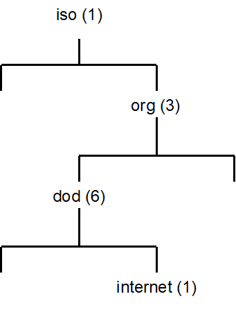

Chapter 3 - Functional description of NetX Duo Secure
Execution Overview
This chapter contains a functional description of NetX Duo Secure TLS. There are two primary types of program execution in a NetX Duo Secure TLS application: initialization and application interface calls.
NetX Duo Secure assumes the existence of ThreadX and NetX Duo. From ThreadX, it requires thread execution, suspension, periodic timers, and mutual exclusion facilities. From NetX Duo it requires the TCP/IP networking facilities and drivers.
Transport Layer Security (TLS) and Secure Sockets Layer (SSL)
The secure network protocol component of NetX Duo Secure is an implementation of the Transport Layer Security (TLS) protocol as described in RFCs 2246 (version 1.0), 4346 (version 1.1), 5246 (version 1.2) and 8446 (version 1.3). Also included are support routines for basic X.509 (RFC 5280).
NetX Duo Secure TLS supports TLS versions 1.2 and 1.3. Implementations are provided for the now-deprecated TLS 1.0 and TLS 1.1, but they must be explicitly initialized and are not recommended for use in new products.
Secure Sockets Layer (SSL) was the original name of TLS before it became a standard in RFC 2246 and "SSL" is often used as a generic name for the TLS protocols. The last version of SSL was 3.0, and TLS 1.0 is sometimes referred to as SSL version 3.1. All versions of the official "SSL" protocol are considered obsolete and insecure and currently NetX Duo Secure does not provide an SSL implementation.
TLS specifies a protocol to generate session keys which are created during the TLS handshake between a TLS client and server and those keys are used to encrypt data sent by the application during the TLS session.
TLS data is divided into records which are equivalent in concept to a TCP packet. Every TLS record has a header, and TLS encrypted records also have a footer (checksum hash). TLS handshake records have an additional header encapsulated within the larger TLS record. The TLS record is encapsulated by the transport layer network protocol in the same manner that a TCP packet is encapsulated by an IP packet.
TLS 1.3
In August 2018, the TLS 1.3 specification was finalized. The new version of the protocol is a fairly significant update that changes some fundamental aspects of the underlying security and performance of TLS. However, these changes are largely invisible to the typical TLS user since they apply primarily to the TLS handshake state machine and session key generation. A number of optional features and extensions were added as well. The following is a summary of the changes and how they impact TLS functionality.
-
The handshake state machine was optimized by removing an entire exchange of messages by the server.
-
Key generation was updated to use a standardized routine called HKDF (HMAC-based Key Derivation Function) and ties the session keys to all of the handshake messages (instead of a few select parameters).
-
All TLS 1.2 and earlier ciphersuites are deprecated and are incompatible with TLS 1.3. Similarly, all TLS 1.3 ciphersuites are unusable with previous versions.
-
All TLS 1.3 ciphersuites provide Perfect Forward Secrecy (PFS) using ephemeral keys1
-
TLS 1.3 removes the "message authentication code" (MAC) in each record in favor of using AEAD2 ciphers
-
Some additional optional features were added, including 0-RTT (Zero Round Trip Time) which allows for application data to be sent during the handshake. 0-RTT is purely optional and is not currently supported in Eclipse ThreadX TLS.
TLS 1.3 does not significantly affect user applications. The API remains exactly the same between versions, and ciphersuites are marked so a single ciphersuite table may be used.
In order to use TLS 1.3, the macro NX_SECURE_TLS_ENABLE_TLS_1_3 must be globally defined. TLS 1.3 is disabled by default in Eclipse ThreadX TLS.
-
"Ephemeral" keys are asymmetric key pairs that are generated during the TLS handshake and used for the secrets exchange for only that session. They key pair is discarded after use — this prevents an attacker from being able to access encrypted data in a recorded TLS session even if a certificate private key is compromised at any time in the future — hence "Perfect Forward Secrecy".
-
Authenticated Encryption with Associated Data — a mode for ciphers like AES that combines encryption and integrity checking in a single operation, eliminating the need for a separate hash of the data for integrity checking.
TLS Record header
Any valid TLS record must have a TLS header, as shown in Figure 1.
Figure 1 - TLS record header
The fields of the TLS record header are defined as follows:
| TLS Header Field | Purpose |
|---|---|
8-bit Message Type |
This field contains the type of TLS record being sent. Valid types are as follows: |
16-bit Protocol Version |
This field contains the TLS protocol version. Valid values are as follows: |
16-bit Length |
This field contains the length of the data encapsulated in the TLS record. |
-
In TLS 1.3 the ChangeCipherSpec message is no longer used, though it still may be sent for compatibility reasons in which case the message is ignored.
-
TLS 1.3 would technically have a value of 0x0304 if this scheme was continued, but the protocol was changed to have the actual protocol version in an extension, so all TLS 1.3 records use 0x0303 in protocol version fields for backward-compatibility.
TLS Handshake Record header
Any valid TLS handshake record must have a TLS Handshake header, as shown in Figure 2.

Figure 2 - TLS Handshake record header
The fields of the TLS Handshake record header are defined as follows:
| TLS Header Field | Purpose |
|---|---|
8-bit Message Type |
This field contains the type of TLS record being sent. Valid types are as follows: |
16-bit Protocol Version |
This field contains the TLS protocol version. Valid values are as follows: |
16-bit Length |
This field contains the length of the data encapsulated in the TLS record. |
8-bit Handshake Type |
This field contains the handshake message type. Valid values are as follows (messages in *bold were added in TLS 1.3): |
24-bit Length |
This field contains the length of the handshake message data. |
-
In TLS 1.3 the ChangeCipherSpec message is no longer used, though it still may be sent for compatibility reasons in which case the message is ignored.
-
TLS 1.3 would technically have a value of 0x0304 if this scheme was continued, but the protocol was changed to have the actual protocol version in an extension, so all TLS 1.3 records use 0x0303 in protocol version fields for backward-compatibility.
The TLS Handshake and TLS Session
A typical TLS handshake (versions 1.0-1.2) is shown in Figure 3. A TLS handshake begins when the TLS Client sends a ClientHello message to a TLS server, indicating its desire to start a TLS session. The message contains information about the encryption the client would like to use for the session, along with information used to generate the session keys later in the handshake. Until the session keys are generated, all messages in the TLS handshake are not encrypted. TLS 1.3 changes the handshake somewhat — details are presented in the next section.
The TLS Server responds to the ClientHello with a ServerHello message, indicating a selection from the encryption options provided by the client. The ServerHello is followed by a Certificate message, in which the server provides a digital certificate to authenticate its identity to the client. Finally, the server sends a ServerHelloDone message to indicate it has no more messages to send. The server may optionally send other messages following the ServerHello and in some cases it may not send a Certificate message, hence the need for the ServerHelloDone message.
Once the client has received all the server’s messages, it has enough information to generate the session keys. TLS does this by creating a shared bit of random data called the Pre-Master Secret, which is a fixed-size and is used as a seed to generate all the keys needed once encryption is enabled. The Pre-Master Secret is encrypted using the public key algorithm (e.g. RSA) specified in the Hello messages (see below for information on public key algorithms) and the public key provided by the server in its certificate. An optional TLS feature called Pre-Shared Keys (PSK) enables ciphersuites that do not use a certificate but instead use a secret value shared between the hosts (usually through physical transfer or other secured method). The shared secret is used to generate the Pre-Master Secret instead of using an encrypted message to send the Pre-Master Secret. See the section on Pre-Shared Keys below.
The encrypted Pre-Master Secret is sent to the server in the ClientKeyExchange message. The server, upon receiving the ClientKeyExchange message, decrypts the Pre-Master Secret using its private key and proceeds to generate the session keys in parallel with the TLS client.
Once the session keys are generated, all further messages can be encrypted using the private-key algorithm (e.g. AES) selected in the Hello messages. One final un-encrypted message called ChangeCipherSpec is sent by both the client and server to indicate that all further messages will be encrypted.
The first encrypted message sent by both the client and server is also the final TLS handshake message, called Finished. This message contains a hash of all the handshake messages received and sent. This hash is used to verify that none of the messages in the handshake have been tampered with or corrupted (indicating a possible breach of security).
Once the Finished messages are received and the handshake hashes are verified, the TLS session begins, and the application begins sending and receiving data. All data sent by either side during the TLS session is first hashed using the hash algorithm chosen in the Hello messages (to provide message integrity) and encrypted using the chosen private-key algorithm with the generated session keys.
Finally, a TLS session can only be successfully ended if either the Client or Server chooses to do so. A truncated session is considered a security breach (since an attacker may be attempting to prevent all the data being sent from being received) so a special notification is sent when either side wants to end the session, called a CloseNotify alert. Both the client and server must send and process a CloseNotify alert for a successful session shutdown.
Figure 3- Typical TLS handshake
TLS 1.3 Handshake
TLS 1.3 is a fairly major overhaul of the TLS protocol. The vast majority of the changes were made to the handshake to increase security and performance. A typical TLS 1.3 handshake is shown in Figure 4. The primary difference can be seen in the number of exchanges between the server and client.
In TLS 1.2 and earlier, the server would send two flights7 of messages — first the ServerHello and then a ChangeCipherSpec message before sending the encrypted Finished message that ends the handshake. In TLS 1.3, the server sends everything in the first flight — ServerHello, extensions, certificate, and Finished. The ChangeCipherSpec message was eliminated and the server generates its session keys and starts encrypting handshake messages immediately following the ServerHello.
The new arrangement means that more of the TLS handshake is protected by encryption, limiting the amount of plaintext data an attacker can access. Additionally, the removal of the second server flight (which was just a ChangeCipherSpec followed by a Finished) means that a TLS client no longer needs to wait to start transmitting application data — as soon as the client sends its own Finished message the session is started.
-
A flight is simply a collection of TLS messages sent simultaneously in a group.
Figure 4 - TLS 1.3 Handshake
| TLS 1.3 also introduced the notion of "Early data" and 0-RTT (Zero Round Trip Time), meaning that some application data can be sent in the first flight of messages. This optional feature was added primarily as an optimization for web browser responsiveness (e.g. to send early HTTP headers to start rendering a page). As of Eclipse ThreadX 6.0 this feature is NOT supported. |
Initialization
The NetX Duo TCP/IP stack must be initialized prior to using NetX Duo Secure TLS. Refer to the NetX Duo User Guide for information on how to properly initialize the TCP/IP stack.
Once the NetX Duo TCP/IP stack has been initialized, TLS can be enabled. Internally, all TLS network traffic and processing is handled by the NetX Duo stack without requiring user intervention. However, TLS has some specific requirements that must be handled separately from the underlying network stack. These parameters are assigned to the TLS control block called NX_SECURE_TLS_SESSION using the nx_secure_tls_session_create service.
TLS has two modes, Server and Client, either of which may be enabled in an application (but only one mode per NetX Duo socket), and each have their own specific requirements, detailed below.
In either mode, NetX Duo Secure TLS requires a TCP socket (NX_TCP_SOCKET) to be created and set up for TCP communications with the remote host. The TCP socket is assigned to a TLS session instance with the nx_secure_tls_session_start service, detailed below.
Initialization — TLS Server
In addition to a TCP socket, NetX Duo Secure TLS Server mode requires a Digital Certificate, which is a document used to identify the TLS server to the connecting TLS client, and the certificates corresponding Private Key, usually for the RSA encryption algorithm. The International Telecommunications Union X.509 standard specifies the certificate format used by TLS and there are numerous utilities for creating X.509 digital certificates.
For NetX Duo Secure TLS, the X.509 certificate must be binary-encoded using the Distinguished Encoding Rules (DER) format of ASN.1. DER is the standard TLS over-the-wire binary format for certificates.
The private key associated with the provided certificate must be in DER-Encoded PKCS#1 format. The private key is only used on the device and will never be transmitted over the wire. Keep private keys safe as they provide the security for TLS communications!
To initialize the TLS Server certificate, the application must provide a pointer to a buffer containing the DER-encoded X.509 certificate and optional DER-encoded PKCS#1 RSA private key data using the nx_secure_x509_certificate_initialize service, which populates the NX_SECURE_X509_CERT structure with the appropriate certificate data for use by TLS.
Once the server certificate has been initialized, it must be added to the TLS control block using the nx_secure_tls_local_certificate_add service.
Once the server’s certificate has been added to the TLS control block, the socket may be used to establish a secure TLS Server connection.
Initialization — TLS Client
NetX Duo Secure TLS Client mode requires a Trusted Certificate Store, which is a collection of X.509-encoded digital certificates from trusted Certificate Authorities (CA’s). These certificates are assumed by the TLS protocol to be "trusted" and serve as the basis for authenticating certificates provided by TLS server entities to NetX Duo Secure TLS Client.
A trusted CA certificate may either be self-signed or signed by another CA, in which case that certificate is called an Intermediate CA (ICA). In a typical TLS application, the server provides the ICA certificates along with its server certificate, but the only requirement for successful authentication is that a chain of issuers (certificates used to sign other certificates) can be traced from the server certificate back to a trusted CA certificate in the Trusted Certificate Store. This chain is known as a chain of trust or certificate chain.
To initialize a trusted CA or ICA certificate, the application must provide a pointer to a buffer containing the DER-encoded X.509 certificate using the nx_secure_x509_certificate_initialize service, which populates the NX_SECURE_X509_CERT structure with the appropriate certificate data for use by TLS.
Trusted certificates that have been initialized are then added to the TLS control block using the nx_secure_tls_trusted_certificate_add service. Failure to add a certificate will cause the TLS Client session to fail as there will be no way for the TLS protocol to authenticate remote TLS server hosts.
The TLS Client also needs space for the incoming server certificate to be allocated (assuming a Pre-Shared Key mode is not being used). As of NetX Duo Secure TLS 5.12, it is no longer necessary for the application to allocate space for remote certificate. However, the legacy option to allocate space for a server certificate is still available and user-allocated certificates will be used before the internal certificate buffer optimization8 — see the nx_secure_tls_remote_certificate_allocate service for more information.
Once the Trusted Certificate Store has been created and space for the server certificate has been allocated, the socket may be used to establish a secure TLS Client connection.
-
The optimization utilizes the "packet buffer" supplied by the user application to the tls session using nx_secure_tls_session_packet_buffer_set to allocate the X.509 parsing structures instead of using the user-supplied structures used in earlier versions of NetX Duo Secure TLS. There is an unlikely possibility of encountering a certificate chain exceeding the size of the packet buffer in which case either the packet buffer size may be increased or nx_secure_tls _remote_certificate_allocate may be used to allocate more space for the certificate chain.
Application Interface Calls
NetX Duo Secure TLS applications will typically make function calls from within application threads running under the ThreadX RTOS. Some initialization, particularly for the underlying network communications protocols (e.g. TCP and IP) may be called from tx_application_define. See the NetX Duo User Guide for more information on initializing network communications.
TLS makes heavy use of encryption routines which are processor-intensive operations. Generally, these operations will be performed within the context of calling thread.
TLS Session Start
TLS requires an underlying transport-layer network protocol in order to function. The protocol typically used is TCP. In order to establish a NetX Duo Secure TLS session, a TCP connection must be established using the NetX Duo TCP API. An NX_TCP_SOCKET must be created and a connection established using the nx_tcp_server_socket_listen and nx_tcp_server_socket_accept services (for TLS Server) or the nx_tcp_client_socket_connect service (for TLS Client).
Once a TCP connection has been established, the TCP socket is then passed to the nx_secure_tls_session_start service.
TLS Packet Allocation
NetX Duo Secure TLS uses the same packet structure as Net Duo TCP (NX_PACKET) except that instead of calling the nx_packet_allocate service, the nx_secure_tls_packet_allocate service must be called so that space for the TLS header may be allocated properly.
TLS Session Send
Once the TLS session has started, the application may send data using the nx_secure_tls_session_send service. The send service is identical in use to the nx_tcp_socket_send service, taking an NX_PACKET data structure containing the data being sent, only that data will be encrypted by the NX Secure TLS stack before being sent, and the packet must be allocated using nx_secure_tls_packet_allocate.
TLS Session Receive
Once the TLS session has started, the application may begin receiving data using the nx_secure_tls_session_receive service. Like the TLS Session send, this service is identical in use to nx_tcp_socket_receive, except that the incoming data is decrypted and verified by the TLS stack before being returned in the packet structure.
TLS Session Close
Once a TLS session is complete, both the TLS client and server must send a CloseNotify alert to the other side to shut down the session. Both sides must receive and process the alert to ensure a successful session shutdown.
If the remote host sends a CloseNotify alert, any calls to the nx_secure_tls_session_receive service will process the alert, send the corresponding alert back to the remote host, and return a value of NX_SECURE_TLS_SESSION_CLOSED. Once the session is closed, any further attempts to send or receive data with that TLS session will fail.
If the application wishes to close the TLS session, the nx_secure_tls_session_end service must be called. The service will send the CloseNotify alert and process the response CloseNotify. If the response is not received, an error value of NX_SECURE_TLS_SESSION_CLOSE_FAIL will be returned, indicating that the TLS session was not cleanly shutdown, a possible security breach.
TLS Alerts
TLS is designed to provide maximum security, so any errant behavior in the protocol is considered a potential security breach. For this reason, any errors in message processing or encryption/decryption are considered fatal errors that terminate the handshake or session immediately.
While handling errors in a local application is relatively straightforward, the remote host needs to know that an error has occurred in order to properly handle the situation and prevent any further possible security breaches. For this reason, TLS will send an Alert message to the remote host upon any error.
Alerts are treated in the same manner as any other TLS messages and are encrypted during the session to prevent an attacker from gathering information from the type of alert provided. During the handshake, the alerts sent are limited in scope to limit the amount of information that could be obtained by a potential attacker.
The CloseNotify alert, used to close the TLS session, is the only non-fatal alert. While it is considered an alert and sent as an alert message, a CloseNotify is unlike other alerts in that it does not indicate an error has occurred.
The alert value and "level" (levels are "warning" and "fatal" — most TLS alerts are "fatal") are defined in the TLS RFCs and indicate the type of error that occurred. Most TLS Alerts other than CloseNotify can be considered an indication of a potential security issue and will result in the TLS session or handshake being aborted. If any TLS API call returns NX_SECURE_TLS_ALERT_RECEIVED (0x114), the API service nx_secure_tls_session_alert_value_get (new in NetX Duo Secure TLS version 5.12) may be used to retrieve the TLS alert value and level for the application to use for any decisions regarding responses to security issues. In most cases, any alert received from the remote host other than CloseNotify should be considered a fatal error, though there are some exceptions — see the TLS RFCs for more information.
TLS Session Renegotiation
TLS supports the notion of "renegotiation" which is simply a renegotiation of the TLS session parameters within the context of an existing TLS session. What this means in practice is that the new handshake messages are encrypted and authenticated using the existing session. Renegotiation is used when a TLS host wants to generate new session parameters (e.g. generate new TLS session keys) without having to complete the existing session. For example, renegotiation may be desirable when security policies for an application dictate that session keys are only used for a limited time but a TLS session remains active beyond that time.
One issue with session renegotiation is that is makes TLS vulnerable to a specific Man-in-the-Middle attack where an attacker can convince a server to initiate a renegotiation with new parameters, thus allowing the attacker to hijack the TLS session. To mitigate this issue, the Secure Renegotiation Indication extension was introduced (see section Error! Reference source not found. section).
NetX Duo Secure TLS completely supports session renegotiation and the Secure Renegotiation Indication extension.
When receiving data from a remote host, renegotiations (and the extension) are handled automatically without application interaction. If notification about session renegotiations is desired, a renegotiation callback may be supplied with the nx_secure_tls_session_renegotiate_callback_set service. The callback will be invoked whenever a renegotiation is requested by the remote host, allowing the application to take action if desired.
To initiate a renegotiation from an active TLS session, simply invoke the nx_secure_tls_session_renegotiate service on the desired TLS session.
TLS Session Resumption
TLS session resumption should not be confused with session renegotiation, despite some similarities. Where session renegotiation involves starting a new handshake within an existing TLS session, session resumption is a purely optional feature that involves restarting a closed TLS session without performing a complete TLS handshake. To achieve this, a TLS implementation may cache the session parameters and keys, associating them with a session ID, a unique identifier supplied in the original handshake. By supplying a session ID to a TLS server, a client indicates that a previous TLS session between the hosts existed and completed some time in the past, and that the client still possesses the state to re-establish the session with a reduced handshake. Since the session keys are theoretically still secret and only known by the two communicating host, the server can start a new TLS session and bypass most of the normal handshake.
Session resumption can be useful to avoid the potentially expensive public-key operations used to share the key generation master secret and verify certificate signatures, but it also requires that the session parameters, keys, and cryptographic state be maintained in memory for all possible sessions (at least for a configurable time window).
The current version of NetX Duo Secure TLS does not support session resumption — the session ID is simply ignored by TLS servers and TLS clients always supply a NULL session ID which prompts the server to perform a complete handshake. The lack of session resumption should cause no inter-operability issues as it is a completely optional feature and all TLS implementations must default to a complete handshake should the session ID be NULL or unrecognized.
Protocol Layering
The TLS protocol fits into the networking stack between the transport layer (e.g. TCP) and the application layer. TLS is sometimes considered a transport-layer protocol (hence Transport Layer Security) but because it acts as an application with regard to the underlying network protocols (such as TCP) it is sometimes grouped into the application layer.
TLS requires a transport layer protocol that supports in-order and lossless delivery, such as TCP. Due to this requirement, TLS cannot run on top of UDP since UDP does not guarantee delivery of datagrams. A separate protocol called DTLS, which is a modified version of TLS, is used for applications that need the security of TLS over a datagram protocol like UDP. NetX Duo Secure supports DTLS, but documentation for DTLS is separate from this document.
Figure 5- TCP/IP and TLS protocol layers
Network Communications Security
Securing communications over public networks and the Internet is a critically important topic and the subject of vast numbers of books, articles, and solutions. The topic is mind-bogglingly complex, but can be reduced to a simple idea: sending information over a network so that only the intended target can access or change that information. This breaks down into three important concepts: secrecy, integrity, and authentication. The TLS protocol provides solutions for all three.
Secrecy
When sending data over a network, it is often important that the data cannot be obtained by a malicious entity. If data is sent over a TCP/IP connection, anyone with access to the network will be able to read that data using easily-available networking tools. To prevent that data from being obtained, it must be encoded such that it cannot be read except by the intended target — this is secrecy. In TLS, encryption algorithms such as RSA and AES provide secrecy.
Integrity
Sometimes, secrecy is not enough to protect data traveling over a network. In some cases, it may be possible for a malicious entity to alter the contents of a TCP packet without needing to know what that packet contains. Encrypted data can be altered, rendering the decryption invalid or changing the parameters of the message leading to whatever result the attacker may be interested in achieving. On the network, we cannot prevent an attacker from changing data in transit, but we can provide a mechanism to know whether or not the data has been changed. When data is changed in transit, it will be known and the data can be rejected. This concept is integrity. In TLS, integrity is provided by a class of cryptographic routines known as hash functions. Some examples of hash functions are MD5 and SHA-1.
Authentication
The third important concept in network communications security is the idea that data should only be communicated to the intended target. An attacker may attempt to pose as a legitimate entity to receive data intended for another host. Even if the data is being sent with secrecy and integrity mechanisms in place, the attacker may still be able to achieve the desired result (a compromise of secure communications) through this deception. To prevent this, a mechanism is needed to prove the identity of a remote host before any sensitive data is sent. The process of proving the identity of a remote host is authentication. In TLS, authentication is provided using digital certificates, hash functions, and a mechanism called digital signatures which utilizes a property of public-key encryption (described below). A limited but useful form of authentication can also be provided with a pre-shared key (PSK).
TLS Encryption
The TLS protocol is a framework for providing secure network communications over the Internet utilizing encryption. Encryption is generally defined as the process of encoding data in such a way that obtaining the original data (or information about that data) is exceedingly difficult without a key. In computer systems encryption is based on complex mathematics such as finite fields and can be classified into two types: private key (or symmetric encryption) and public key (or asymmetric encryption). Examples of private key encryption are AES (Advanced Encryption Standard) and RC4 (Rivest Cipher 4). Examples of public-key encryption are the RSA (Rivest, Shamir, Adleson) and Diffie-Hellman ciphers.
The TLS protocol makes use of both private key and public key encryption routines to provide a balance of performance, security, and flexibility.
Private-Key Encryption
Private-key encryption has been in use for thousands of years. Basic substitution ciphers (where a letter or word is replaced by another unrelated letter or word) are the earliest known examples of encryption, but with the advent of the information age private key encryption has significantly improved.
A private key cipher uses a "key" which is simply a value (which could be a word, phrase, or number in the general case) that is used to somehow encode some data so that only an entity that had access to that key could decode the data in a meaningful way. The key is used for both encryption and decryption of the data, hence the other name symmetric encryption.
Private key ciphers are generally fast and fairly simple to implement, even if the mathematics involved are exceedingly complex. For this reason, TLS uses private key ciphers for the bulk of secure communications.
However, private key encryption has a problem when we try to apply it to general computer network communications: the key must be shared between both machines trying to communicate. In the general case, it is impractical and often impossible to communicate a private key securely between two machines on the Internet, as it can be assumed that the network traffic can be obtained by any number of entities in the various hops that data takes when being routed through the Internet. If the key is obtained by a malicious entity, all data encrypted using that key is compromised. As most machines on the Internet have only a network connection and not another secure channel for communications, sending keys over the network is tantamount to sending the data unencrypted — it provides no security.
For this reason, private key encryption is not sufficient to implement a general-purpose network communications security protocol. This is where Public Key encryption can help.
NetX Duo Secure TLS supports AES private-key encryption.
Public-Key Encryption
Unlike private key encryption, public key encryption is a fairly new concept, having been developed in the 1970’s. Using a concept known as "trap-door functions" in mathematics, it was discovered that there was a way to share a key over a network without compromising the security of then encrypted data.
The way public key encryption works is that the key (in the private-key encryption sense described above) is split into two parts, a private key and a public key, from where public key encryption gets its name. The concept is that one of these keys (typically the public key) is used for encryption, while the other is used for decryption. This asymmetry of keys is the reason for the other name for public key encryption: asymmetric encryption.
The mathematics behind public key encryption are fairly complex, but the idea is that the public key can only be used for encryption, and obtaining that key does not allow encrypted data to be obtained. The private key, in turn, is the only way to decrypt data encrypted using the public key. Thus, by keeping the private key secret, anyone wishing to communicate securely with the owner of that private key need only encrypt their data with the corresponding public key with the knowledge that only someone in possession of that private key can obtain the secure data.
NetX Duo Secure TLS supports RSA public-key encryption.
| RSA is a very processor-intensive operation if the software RSA implementation is used. Larger key sizes increase the processing power required by a square factor — 4X slower for a 2X increase in key size. |
Public-Key Authentication
An interesting side-effect of the public-key encryption concept is that it can be used to provide authentication as well as encryption by doing the operation in reverse: encrypting using the private key and decrypting using the public key. The actual mechanism for doing this depends on the public key algorithm being used, but the concept is the same.
To authenticate using public key authentication, the owner of a private key encrypts some piece of data (typically a cryptographic hash of the data to be authenticated) using that private key. Then, someone wishing to authenticate that the data came from the owner of the private key uses the associated public key to decrypt the data — if the decryption is successful, and assuming the user trusted the validity of that public key, then the user can be certain that the data came from the owner of the private key.
In TLS, public key authentication is used to verify the validity of a digital certificate provided by a TLS server (and optionally the TLS client) using public keys from the trusted certificate store. The certificate is checked against a public key in the store and the data in the certificate is used to check the identity of the server.
NetX Duo Secure TLS supports RSA authentication.
Cryptographic Hashing
Encryption is not the only cryptographic operation used in TLS. In order to provide message integrity during a TLS session, a checksum is needed to ensure that the message contents have not been tampered with. However, a simple checksum (as is used in TCP) is insufficient to guarantee an acceptable level of integrity as it can be easily subverted by a knowledgeable attacker. The mechanism used by TLS to provide message integrity is known as a cryptographic hash.
Encryption is a 1:1 encoding — that is, the entirety of the original data can be obtained from the encrypted data. However, a hash maps an arbitrary amount of data into a fixed size value, just like a checksum. Unlike a simple checksum, a hash is specifically designed to reduce collisions, where different input data result in the same output. In a simple checksum, if a bit is flipped from 1 to 0 and another bit from 0 to 1, the checksum is the same. With a cryptographic hash, the output would differ significantly, making it difficult for an attacker to change the hashed data and have the hash operation on the changed data still result in the same value (and thus falsely verifying the integrity of that data).
TLS uses a number of different hash algorithms to provide integrity for messages, both application messages and TLS control messages. These include MD5, SHA-1 and SHA-256.
NetX Duo Secure TLS supports MD5, SHA-1, and SHA-256 hashing.
TLS Extensions
TLS provides a number of extensions that provide additional functionality for certain applications. These extensions are typically sent as part of the ClientHello or ServerHello messages, indicating to a remote host the desire to use an extension or providing additional details for use in establishing the secure TLS session.
In general, extensions provide optional parameters to TLS at the beginning of the handshake that guide the proceeding operations. Some extensions require application input or decision making, while others are handled automatically.
The following table describes the TLS extensions currently supported by NetX Duo Secure TLS:
| Extension Name | Description |
|---|---|
Secure Renegotiation Indication |
This extension mitigates a Man-in-the-Middle attack vulnerability that could occur during a renegotiation handshake. |
Server Name Indication |
This extension allows a TLS Client to supply a specific DNS name to a TLS Server, allowing the server to select the correct credentials (assumes the server has multiple identity certificates and network entrypoints). |
Signature Algorithms |
This extension enables a TLS Client to provide a list of acceptable signature and hash algorithms to a TLS Server. |
Overview of supported TLS Extensions
Secure Renegotiation Indication
TLS supports the notion of performing a handshake within an existing TLS session, thereby using the established session to encrypt the handshake messages. This process allows the cryptographic session keys to be re-established without ending the TLS session (see section "TLS Session Renegotiation").
Unfortunately, after TLS had been using renegotiation for some time, it was discovered that there was a vulnerability to a Man-in-the-Middle attack that exploited the renegotiation feature. To close the vulnerability, the Secure Renegotiation Indication extension was introduced. Essentially, the Secure Renegotiation extension uses the Finished message hash from the established connection to verify that the original hosts are participating in the renegotiation handshake — essentially the hash is used as a verification token under the assumption that an attacker would not be able to forge the hash (which would require access to the session keys).
NetX Duo Secure TLS handles renegotiation automatically and uses the Secure Renegotiation Extension by default. No application interaction is required.
Server Name Indication
During the TLS handshake, a TLS Client expects a remote server to provide an identity certificate so the client can authenticate the server. However, there may be some cases where a server will provide multiple different services with different "virtual" servers each having unique identities. In the case of a single server with multiple identities, a TLS client can supply a specific DNS name that the server will use to select the proper credentials — the mechanism for supplying this name is the Server Name Indication (SNI) extension.
For an application using the SNI extension, some interaction is required. For TLS Clients, the application must supply a DNS name to be sent to the remote server. For TLS Servers, the application must read the DNS name from the extension and select an appropriate certificate to send back to the client.
The following sections provide more detail on how to use the SNI extension in NetX Duo Secure TLS.
SNI Extension — TLS Client
A NetX Duo Secure TLS Client wishing to use the SNI extension must provide a DNS name to TLS to be supplied during the handshake. This name must be initialized and supplied prior to starting a TLS session since the extension is sent in the ClientHello message which starts the handshake process.
The following code snippet illustrates the use of the extension. First, a NX_SECURE_X509_DNS_NAME object is initialized with the desired server name. Then, prior to starting the TLS session, the name is provided to TLS using the SNI extension API. Once the name is set, no further action is required. See the API reference in Chapter 4
Description of NetX Duo Secure Services for more information on the individual functions.
/* The dns_name variable will contain our desired server name. */
UINT status;
NX_SECURE_X509_DNS_NAME dns_name;
/* Initialize the server DNS name. */
status = nx_secure_x509_dns_name_initialize(&dns_name, "www.example.com",
strlen("www.example.com"));
/* Initialize SNI extension in previously-initialized TLS Session. */
status = nx_secure_tls_session_sni_extension_set(&client_tls_session, &dns_name);
/* Now start the TLS session, starting with establishing the TCP connection – if
TLS is started before initializing the SNI extension, the extension will not be
sent in the ClientHello message! */
status = nx_tcp_client_socket_connect(&client_socket, IP_ADDRESS(1, 2, 3, 4), 443,
5 * NX_IP_PERIODIC_RATE);
status = nx_secure_tls_session_start(&client_tls_session, &client_socket,
NX_WAIT_FOREVER);SNI Extension — TLS Server
On the TLS Server side, the SNI extension may be processed by the application in order to select proper credentials (e.g. certificate) to provide to the remote client during the handshake. To do this, the application must supply a session callback which is invoked following the receipt of a ClientHello message.
The example code for the nx_secure_tls_session_server_callback_set API (see page 122) illustrates the parsing of an incoming SNI extension using a server callback. Essentially, the TLS Server receives a ClientHello and invokes the callback. Then the application uses the nx_secure_tls_session_sni_extension_parse API to parse the extension data provided to the callback to find the SNI extension and return the supplied DNS name (note that the extension only supports a single DNS name). Once the name is obtained, the application uses it to find and send the appropriate server identity certificate (and issuer chain if applicable).
Signature Algorithms Extension
This extension is specific to TLS 1.2 and allows a TLS Client to provide a list of acceptable signature and hash algorithm pairs that are acceptable for use in generating and verifying digital signatures. The list is generated automatically by NetX Duo Secure TLS for TLS Clients using the cipher table supplied to nx_secure_tls_session_create. No application interaction is required.
Authentication Methods
TLS provides the framework for establishing a secure connection between two devices over an insecure network, but part of the problem is knowing the identity of the device on the other end of that connection. Without a mechanism for authenticating the identity of remote hosts, it becomes a trivial operation for an attacker to pose as a trusted device.
Initially, it may seem that using IP addresses, hardware MAC addresses, or DNS would provide a relatively high level of confidence for identifying hosts on a network, but given the nature of TCP/IP technology and the ease with which addresses can be spoofed and DNS entries corrupted (e.g. through DNS cache poisoning), it becomes clear that TLS needs an additional layer of protection against fraudulent identities.
There are various mechanisms that can provide this extra layer of authentication for TLS, but the most common is the digital certificate. Other mechanisms include Pre-Shared Keys (PSK) and password schemes.
Digital Certificates
Digital certificates are the most common method for authenticating a remote host in TLS. Essentially, a digital certificate is a document with specific formatting that provides identity information for a device on a computer network.
TLS normally uses a format called X.509, a standard developed by the International Telecommunication Union, though other formats of certificates may be used if the TLS hosts can agree on the format being used. X.509 defines a specific format for certificates and various encodings that can be used to produce a digital document. Most X.509 certificates used with TLS are encoded using a variant of ASN.1, another telecommunications standard. Within ASN.1 there are various digital encodings, but the most common encoding for TLS certificates is the Distinguished Encoding Rules (DER) standard. DER is a simplified subset of the ASN.1 Basic Encoding Rules (BER) that is designed to be unambiguous, making parsing easier. Over the wire, TLS certificates are usually encoded in binary DER, and this is the format that NetX Duo Secure expects for X.509 certificates.
Though DER-formatted binary certificates are used in the actual TLS protocol, they may be generated and stored in a number of different encodings, with file extensions such as .pem, .crt, and .p12. The different variants are used by different applications from different manufacturers, but generally all can be converted into DER using widely available tools.
The most common of the alternative certificate encodings is PEM. The PEM format (from Privacy-Enhanced Mail) is a base-64 encoded version of the DER encoding that is often used because the encoding results in printable text that can be easily sent using email or web-based protocols.
Generating a certificate for your NetX Duo Secure application is generally outside the scope of this manual, but the OpenSSL command-line tool (www.openssl.org) is widely available and can convert between most formats.
Depending on your application, you may generate your own certificates, be provided certificates by a manufacturer or government organization, or purchase certificates from a commercial certificate authority.
To use a digital certificate in your NetX Duo Secure application, you must first convert your certificate into a binary DER format and, optionally, convert the associated private key (the "private exponent" for RSA, for example) into a binary format, typically a PKCS#1-formatted, DER-encoded RSA key or a DER-encoded ECC key. Once the conversion is complete, it is up to you to load the certificate and private key onto the device. Possible options include using a flash-based file system or generating a C array from the data (using a tool such as "xxd" from Linux) and compiling the certificate and key into your application as constant data.
Once your certificate is loaded onto the device, the TLS API can be used to associate your certificate with a TLS session.
For details and examples on how to use X.509 certificates with NetX Duo Secure TLS, see the section "Importing X.509 certificates into NetX Duo Secure".
Refer to the following TLS services in the API reference for more information:
-
nx_secure_x509_certificate_initialize
-
nx_secure_tls_local_certificate_add
-
nx_secure_tls_local_certificate_remove
-
nx_secure_tls_remote_certificate_allocate
-
nx_secure_tls_trusted_certificate_add
-
nx_secure_trusted_certificate_remove
TLS Client Certificate Specifics
TLS Client implementations generally do not require a "local" certificate9 to be loaded onto the device. The exception to this is when Client Certificate Authentication is enabled, but this is far less common.
A TLS Client requires at least one "trusted" certificate10 to be loaded (more may be loaded if required), and space for a "remote" certificate11 to be allocated.
For more information on adding trusted certificates and allocating space for remote certificates, see the TLS API reference for the following services: nx_secure_tls_remote_certificate_allocate, nx_secure_tls_trusted_certificate_add.
-
A "local" certificate is a certificate that identifies the local device — that is, it provides identity information for the device upon which the TLS application is loaded.
-
A "trusted" certificate is a certificate that provides a basis for trust and authentication of the remote device, either directly or through a Public Key Infrastructure (PKI). The root of the chain of trust is usually called a "Certification Authority" or CA certificate.
-
A "remote" certificate refers to the certificate sent by the remote host during the TLS handshake. It provides identity for that remote host and is authenticated by comparing it to a "trusted" certificate on the local device.
TLS Server Certificate Specifics
TLS Server implementations generally do not require "trusted" certificates to be loaded onto the device or remote certificates to be allocated. The exception to this being when Client Certificate Authentication is enabled (this is less common).
A TLS Server requires a "local" certificate to be loaded so the server can provide it to the remote client during the TLS handshake to authenticate the server to the client.
For more information about loading local certificates for use with NetX Duo TLS server applications, see the API reference for the following services:
-
nx_secure_tls_local_certificate_add,
-
nx_secure_tls_local_certificate_remove.
Pre-Shared Keys (PSK)
An alternative mechanism for providing identification authentication in TLS is the notion of Pre-Shared Keys (PSK). Using a PSK ciphersuite removes the need to do the processor-intensive public-key encryption operations, a boon for resource-constrained embedded devices. The PSK replaces the certificate in the TLS handshake and is used in place of the encrypted Pre-Master Secret for TLS session key generation.
The PSK ciphersuites are limited in the sense that that a shared secret must be present on both devices before a TLS session can be established. This means that the devices must have been loaded with that secret using some secure means other than a TLS PSK connection - PSKs may be updated over a TLS PSK connection, but the device must necessarily start with a PSK that is loaded through some other mechanism. For example, a sensor device and its gateway device could be loaded with PSKs in the factory before shipping, or a standard TLS connection (with a certificate) could be used to load the PSK.
PSK ciphersuites come in a couple of forms, described in RFC 4279. The first uses RSA or Diffie-Hellman keys which are used in the same manner as the public keys transmitted in the certificate in standard TLS handshakes. The second form, which is of more use in a resource-constrained environment, uses a PSK that is used to directly generate the session keys (for use by AES, for example), avoiding the use of the expensive RSA or Diffie-Hellman operations.
NetX Duo Secure supports the second form of PSK ciphersuites, enabling applications to remove all public-key cryptography code and memory usage. The PSK itself is not an AES key, but can be considered as being more like a password from which the actual keys are generated. There are few restrictions on what the PSK value can be, though longer values will provide more security (same as with passwords).
To use PSK with your NetX Duo Secure application, you must first define the global macro NX_SECURE_ENABLE_PSK_CIPHERSUITES. This is usually done through your compiler settings, but the definition can also be placed in the nx_secure_tls.h header file. With the macro defined, PSK ciphersuite support will be compiled into your NetX Duo Secure TLS application.
With PSK support enabled, you can then use the TLS API to set up PSKs for your application. Each PSK will require a PSK value (the actual secret "key" — keep this value safe), an "identity" value used to identify the specific PSK, and an "identity hint" that is used by a TLS server to choose a particular PSK value.
The PSK itself can be any binary value as it is never sent over a network connection. The PSK can be any value up to 64 bytes in length.
The identity and hint must be printable character strings formatted using UTF-8. The identity and hint values may be any length up to 128 bytes.
The identity and PSK form a unique pair that is loaded onto every device in the network that need to communicate with one another.
The "hint" is primarily used for defining specific application profiles to group PSKs by function or service. These values must be agreed upon in advance and are application dependent. As an example, the OpenSSL command-line server application (with PSK enabled) uses the default string "Client_identity", which must be provided by a TLS client in order to continue with the TLS handshake.
For more information on PSKs, see the NetX Duo Secure API reference for the following services: nx_secure_tls_client_psk_set, nx_secure_tls_psk_add.
Importing X.509 certificates into NetX Duo Secure
Digital certificates are required for most TLS connections on the Internet. Certificates provide a method for authenticating previously unknown hosts over the Internet through the use of trusted intermediaries, usually called Certificate Authorities or CAs. To connect your NetX Duo Secure device with a commercial cloud service (such as Amazon Web Services), you will need to import certificates into your application by loading them onto your device.
Along with certificates, you will also sometimes need a private key that is associated with your certificate. In some applications (such as TLS Client when Client Certificate Authentication is not being used) the certificate alone will be sufficient, but if your certificate is being used to identify your device you will need a private key. Private keys are typically generated when you create your certificate and are stored in a separate file, often encrypted with a password.
Certificate Types
Digital certificates are generally used to identify entities on a network, but depending on what their application they will have slightly different properties.
Local Certificates
For the purposes of this documentation, we will refer to "local certificates" as those certificates which provide an identity for our local device (another possible name could be "device certificate"). These certificates will be provided to a remote host when the remote host desires to authenticate the local device.
Remote Certificates
In this documentation, "remote certificates" refers to those certificates provided by a remote host during the TLS handshake when applicable. Space for these certificates must be allocated or NetX Duo Secure will not be able to parse them and complete the TLS handshake.
Signing Certificates
A "signing certificate" is used to digitally sign other certificates or data for the purpose of authentication. These certificates may be either intermediate or root certificates within a Public Key Infrastructure (PKI) and are generally not used to identify individual devices or hosts.
Root CA Certificates
"Root CA certificates" are signing certificates that provide the basis of a PKI and are self-signed, rather than being signed by another signing certificate. At least one Root CA certificate is typically required for a TLS Client to verify remote servers.
Certificate formats
Digital certificates are simply files containing structured data encoded using the ASN.1 syntax. However, there are various formats in which certificates may be stored and it is important to have the right format before loading a certificate into a NetX Duo Secure application.
The most common formats for certificates are DER and PEM. DER (for Distinguished Encoding Rules, an ASN.1 format) is the binary format used by TLS when performing the initial handshake. PEM (from Privacy Enhanced Mail) is a base-64 encoded version of the DER format which is suitable for emailing or sending over HTTP on the web. Different vendors use different filename extensions for certificates, such as ".pem" or ".crt" for PEM certificates, and ".der" for DER certificates. If you have a certificate and it is not clear what format is used, opening the file in a text editor will allow you to determine the type since DER files are encoded binary, and PEM files are regular ASCII text that start with the header "----BEGIN CERTIFICATE----".
NetX Duo Secure requires that your certificate be in binary DER format, so you will need to convert your certificate into DER format before importing. This can be done with readily available tools such as OpenSSL.
If you need a private key for your application, the key file will be encoded using PEM or DER in a specific format (PKCS#1 for RSA, RFC 5915 for ECC). The private key file will need to be converted into DER before being imported.
The following OpenSSL commands are given as an example for converting certificates and RSA key files into the DER format required by NetX Duo Secure (ECC is similar — refer to the OpenSSL documentation).
openssl x509 -inform PEM -in <certificate> -outform DER -out cert.der
openssl x509 -inform PEM -in <root CA cert> -outform DER -out CA_cert.der
openssl rsa -inform PEM -in <private key> -outform DER -out private.keyPrivate Keys and Certificates
For certificates that identify a device, the associated private key must be loaded along with the certificate. The private key (which may be for one of the public-key algorithms such as RSA, Diffie-Hellman, or Elliptic-Curve Cryptography) is used by a TLS server to decrypt the incoming key material (the "pre-master secret") from a TLS client, thereby authenticating itself to the client. For a TLS Client, if an identity certificate (a certificate with its associated private key) is provided and a server requests a client certificate, the private key is used to authenticate the client — in the case of RSA the client encrypts a token using the private key which the server then decrypts using the client’s public key, provided in the client certificate (Diffie-Hellman and ECC authentication happens in a similar fashion but the details are a bit different).
In NetX Duo Secure, the service nx_secure_x509_certificate_initialize is used to initialize an X.509 certificate (see section "Loading certificates onto your device" for more information) and optionally associate a private key with that certificate.
If a private key is supplied, the certificate is marked as being the "identity" certificate used to identify the device. The key is passed as a contiguous binary blob and a length, with an associated key type. The key type depends on the type of key (e.g. RSA, ECC, etc.) and the format (e.g. PKCS#1 DER). If no key is supplied, the value NX_SECURE_X509_KEY_TYPE_NONE (value 0x0) can be passed to indicate no key is being supplied (a length of 0 and a NX_NULL pointer for the data parameter will achieve the same effect).
The following table shows the key types known to NetX Duo Secure and the associated type identifier to be passed into nx_secure_x509_certificate_initialize. Additional key types will be added as more encryption algorithms are added to NetX Duo Secure.
| Identifier | Algorithm | Format | Encoding | Value |
|---|---|---|---|---|
NX_SECURE_X509_KEY_TYPE_NONE |
None |
N/A |
N/A |
0x0 |
NX_SECURE_X509_KEY_TYPE_RSA_PKCS1_DER |
RSA |
PKCS#1 |
DER |
0x1 |
NX_SECURE_X509_KEY_TYPE_EC_DER |
ECDSA |
RFC 5915 |
DER |
0x2 |
User-defined private key types
The values of the key type identifiers for the nx_secure_x509_certificate_initialize service govern the actions taken when the private key is supplied. For known types, the values are in the range 0x0000 0000 — 0x0000 FFFF (bottom 16 bits of a 32-bit unsigned integer). For platforms with custom key types12 (as is the case for some hardware-based encryption engines), a user-defined key type in the range 0x0000 1000-0xFFFF FFFF (top 16 bits non-zero) may be passed as the key type. If any of the top 16 bits of the key type are set, then the private key data is passed directly to the appropriate cryptographic routine (e.g. RSA) supplied in the TLS ciphersuite table. User-defined key types are not parsed or otherwise processed before being passed to the cryptographic routine. In addition, the user-defined key type will also be passed to the cryptographic routine so that any appropriate processing can be handled at that level.
Note that user-defined key types are generally used for specific hardware platforms that utilize custom (possibly encrypted) key data. Generally this implies that the key data is generated or encoded using a mechanism specific to that hardware vendor (or in the case of a standard like PKCS#11, a specific standard). Consult your hardware platform documentation for more information.
-
User-defined key types require a corresponding custom cryptographic routine to handle the custom key format. The cryptographic routine must have a matching algorithm (e.g. RSA) and be passed into TLS in the ciphersuite table.
Loading certificates onto your device
Any method for loading a file onto your device will be sufficient to import your certificates.
The simplest method for loading a certificate is to convert the binary DER-encoded data into a C array and compile it into your application as a constant. This can be easily done with tools such as "xxd" in Linux (with the "-i" option).
Alternatively, you can load your certificate into a flash filesystem or other storage options as long as you can pass a pointer to the certificate data into the NetX Duo Secure API.
Certificate files needed for NetX Duo Secure
The certificate files you will need to import depends on your application. In general, TLS Servers require a certificate to identify the device, and TLS Clients require one or more Trusted Certificates to authenticate remote servers. The following table illustrates certificates needed for some different TLS applications.
| TLS functionality/options | Certificates/keys needed (minimum) |
|---|---|
TLS Client |
Root CA certificate |
TLS Server |
Local certificate, private key for that certificate |
TLS Server with Client Certificate Authentication |
Local certificate, private key, Root CA |
TLS Client with Client Certificate Authentication |
Local certificate, private key, Root CA |
TLS Client or Server with Pre-Shared Keys only |
None (PSK used instead of certificates) |
The relevant services for loading certificates are as follows:
| API Name | Purpose |
|---|---|
nx_secure_x509_certificate_initialize |
Must be called for all certificates to populate the NX_SECURE_X509_CERT structure with your certificate data and private key. |
nx_secure_tls_local_certificate_add |
Add a local certificate to a TLS session to identify your device. |
nx_secure_tls_local_certificate_remove |
Remove a local certificate from a TLS session. |
nx_secure_tls_remote_certificate_allocate |
Allocate space for a remote certificate (called with an uninitialized NX_SECURE_X509_CERT). |
nx_secure_tls_trusted_certificate_add |
Add a certificate to a TLS Session as a Trusted Certificate for authenticating remote hosts. |
nx_secure_tls_trusted_certificate_remove |
Remove a trusted certificate from a TLS Session. |
Working with AWS IoT Certificates
In the Amazon Web Services IoT interface, select "Security" from the sidebar menu and select "Certificates". Create a new certificate and follow the instructions to download your new device certificate.
Once you have downloaded your certificates, you will need to convert them into DER format using OpenSSL or a similar utility.
| AWS will also provide a public key file. The public key is contained within the local device certificate so it does not need to be imported into your application. |
As an example, here are the commands to convert the local device certificate and its private key into DER format for use with NetX Duo Secure:
openssl x509 -inform PEM -in <certificate> -outform DER -out cert.der
openssl x509 -inform PEM -in <root CA cert> -outform DER -out CA_cert.der
openssl rsa -inform PEM -in <private key> -outform DER -out private.keyThe converted files can be imported into your application following the above instructions.
X.509 Certificate Validation in NetX Duo Secure
When using TLS with X.509 certificates for host identification and verification, it is important to understand how those certificates are actually validated. While the TLS specification does not provide detailed instructions on how to validate a certificate, it does refer to the X.509 specification (RFC 5280). In general, it is expected that TLS will perform at least basic validation on incoming certificates (those certificates supplied by the remote host during the TLS handshake), and NetX Duo Secure TLS is no different.
Basic X.509 Validation
For any incoming certificate, NetX Duo Secure TLS will perform basic X.509 path validation. The process involves checking each certificate’s digital signature against its issuer certificate, which may be provided by the remote host or be located in the trusted certificate store (see the section "Importing X.509 certificates into NetX Duo Secure" for more information on importing trusted certificates). The validation process is recursively repeated on the issuer certificates until a trusted certificate is reached or the chain ends (with a self-signed certificate or a missing issuer certificate). If a trusted certificate is reached, the certificate is verified, otherwise it is rejected. Additionally, at each stage in the verification process the expiration date of each certificate is checked against the time provided by the application timestamp function (see the service "nx_secure_tls_session_time_function_set" for more information).
The X.509 specification also provides an algorithm for supporting "policies", which are identifiers that are present in an X.509 extension that can be checked during path validation. NetX Duo Secure currently treats X.509 certificates as though the "anyPolicy" option is defined — that is, all policies are acceptable and the optional policy checking is not performed. The NetX Duo Secure X.509 implementation may be augmented with this feature in a future release. For now, the policy extension may be obtained from a certificate using the nx_secure_x509_extension_find API.
Once the basic path validation is complete, TLS will invoke the certificate verification callback supplied by the application using the nx_secure_tls_session_certificate_callback_set API. If no callback is supplied, the certificate is considered to be trusted following successful path validation. If a callback is supplied, the callback will perform any additional validation of the certificate required by the application. The return value from the callback is used to determine whether to continue with the TLS handshake or to abort the handshake due to a validation failure.
The callback is invoked with a pointer to the relevant TLS session and an NX_SECURE_X509_CERT pointer to the certificate to be validated. Between the TLS session and the certificate, the application has all of the data it needs from TLS to perform additional verification checks.
To help with the additional validation, NetX Duo Secure provides X.509 routines for some common validation operations, including DNS validation and Certificate Revocation List checking. All of these routines are suitable for use within the certificate verification callback but may also be used to perform off-line checking of X.509 certificates.
The following table summarizes the available helper functions for X.509 certificate processing. More detailed explanations for the operations can be found in the following sections and the API reference in Chapter 4
Description of NetX Duo Secure Services provides additional details on the specific routines.
| API Name | Description |
|---|---|
nx_secure_x509_common_name_dns_check |
Check the X.509 subject Common Name and SubjectAltName against an expected DNS name |
nx_secure_x509_crl_revocation_check |
Check for a revoked certificate in an X.509 Certificate Revocation List (CRL) |
nx_secure_x509_extended_key_usage_extension_parse |
Parse and find a specific extended key usage OID in a certificate |
nx_secure_x509_key_usage_extension_parse |
Parse and return the key usage bitfield in a certificate |
nx_secure_x509_extension_find |
Find and return the raw DER-encoded ASN.1 data for a specific extension. |
X.509 helper functions for use in the certificate verification callback
X.509 Extensions
The X.509 specification describes a number of "extensions" that can be used to supply additional information that can be utilized in the verification of certificates. For the most part, these extensions are optional and are not required for secure validation of a digital certificate against a trusted root certificate. However, NetX Duo Secure does support some basic extensions. Support for additional extensions may be added in future releases.
The currently supported extensions are listed in the following table:
| Extension Name | Description | Relevant API |
|---|---|---|
Key Usage |
Provides acceptable uses for a certificate’s public key in a bitfield |
nx_secure_x509_key_usage_extension_parse |
Extended Key Usage |
Provides additional acceptable uses for a certificate’s public key using OIDs |
nx_secure_x509_extended_key_usage_extension_parse |
Subject Alternative Name |
Provides alternative DNS names that are also represented by the certificate |
nx_secure_x509_common_name_dns_check |
Unsupported X.509 Extensions
NetX Duo Secure’s X.509 implementation does provide a service to extract unsupported extensions as well: nx_secure_x509_extension_find. This API is intended for advanced users as it requires knowledge of DER-encoded ASN.1 in order to parse the data returned. It it used internally to extract supported extensions but is supplied for convenience in developing customized support for X.509 extensions.
To use nx_secure_x509_extension_find, a NX_SECURE_X509_EXTENSION is passed in, along with the certificate and an extension ID, which is an integer representation of the variable-length OID string for a known extension type. A complete list of supported OIDs for X.509 extensions is provided in the API reference for nx_secure_x509_extension_find on page 178.
The NX_SECURE_X509_EXTENSION structure is defined as follows:
typedef struct NX_SECURE_X509_EXTENSION_STRUCT
{
/* Identifier (maps to OID) for this extension. */
USHORT nx_secure_x509_extension_id;
/* Critical flag - boolean value. */
USHORT nx_secure_x509_extension_critical;
/* Pointer to DER-encoded extension data. */
const UCHAR *nx_secure_x509_extension_data;
ULONG nx_secure_x509_extension_data_length;
} NX_SECURE_X509_EXTENSION;When the service returns successfully, the structure will be populated with the relevant data from the certificate. The nx_secure_x509_extension_id field is generally used for internal purposes but will be populated with the relevant OID integer representation. The nx_secure_x509_extension_critical field exposes the X.509 critical extension flag value (Boolean). The nx_secure_x509_extension_data and nx_secure_x509_extension_data_length fields contain a pointer to the DER-encoded ASN.1 data for the extension, and the length of that data, respectively.
Actual parsing of the extension ASN.1 data is beyond the scope of this document, but if you have access to the NetX Duo Secure TLS source you can see how the parsing is done wherever nx_secure_x509_extension_find is called for supported extensions.
X.509 DNS Validation
A common certificate validation operation in TLS involves checking the Top-Level Domain (TLD) name of a remote host against the X.509 certificate provided by that host during the TLS handshake. This operation helps to ensure that the certificate does indeed match the host server that provided it, assuming the DNS lookup can be trusted. In NetX Duo Secure TLS, this functionality is provided by the service nx_secure_x509_common_name_dns_check, which takes the certificate and a string containing the TLD portion of the URL used to access the host. The TLD is compared to the certificate’s Common Name field and if it matches, NX_SUCCESS is returned. If the Common Name does not match, the routine will also check for the existence of the X.509 certificate extension subjectAltName. If a subjectAltName is present, any DNSName entries in the extension are also checked against the provided TLD. Again, if any match, NX_SUCCESS is returned. If no match is found, an error suitable for returning from the certificate validation callback is returned.
X.509 Key Usage and Extended Key Usage Extensions
The X.509 Key Usage and Extended Key Usage extensions provide information on how a certificate’s public key may be used when authenticating that certificate. The key usage is supplied by the certificate’s issuer when the certificate is signed and issued. The key usage may be used by a TLS host to check that the certificate is authorized to be used to authenticate a remote TLS host and perform other operations.
The Key Usage extension consists of a simple bitfield where each of the bits represents a specific key usage. A complete list of these values is provided in the API reference for nx_secure_x509_key_usage_extension_parse on page 183. For a more complete description of the key usage bits and their meanings, refer to RFC 5280, section 4.2.1.3.
The Extended Key Usage extension, like the Key Usage extension, provides acceptable key use information. However, in order to support arbitrary usages, the Extended Key Usage extension utilizes OIDs instead of a bitfield. When parsing an Extended Key Usage extension in NetX Duo Secure X.509, an integer representing the OID is supplied by the application — the nx_secure_x509_extended_key_usage_extension_parse service will then return whether that OID is present. A complete list of supported OIDs for Extended Key usage is provided in the API reference for nx_secure_x509_extended_key_usage_extension_parse on page 175. For a more complete description of the OIDs and their meanings, refer to RFC 5280, section 4.2.1.12.
X.509 CRL Revocation Status Checking
X.509 provides a mechanism called the Certificate Revocation List (CRL) that allows a digital certificate signing authority to revoke the validity of certificates it has signed. Any application that needs to verify certificates from a signing authority can obtain a CRL and compare any certificates signed by that authority (issuer) against the CRL to see if they have had their status revoked for some reason (such as compromised private key). In this way, the application can avoid using potentially dangerous certificates that pass other certificate validation checks.
Obtaining a CRL is done by an application by downloading the DER-encoded list from a pre-defined server or through some other means. The actual setup varies from issuer to issuer so NetX Duo Secure does not provide a mechanism for obtaining CRLs, but it does provide a routine to check a certificate against a CRL, nx_secure_x509_crl_revocation_check.
The API takes a DER-encoded CRL, a certificate store (such as the one in a TLS session) to check against, and the certificate to be checked. The routine first validates the CRL itself against the trusted store (part of the certificate store provided by the application). This is important to protect against fraudulent CRLs being used for Denial-of-Service attacks and establishes that the CRL is actually from the proper issuer. Following the CRL validation, the issuer is checked — if the issuer of the CRL does not match the issuer of the certificate, then the CRL is not valid for that certificate and an error is returned. It is up to the application to determine whether the TLS handshake can continue at this point. If the issuers do match, then the CRL is searched for the serial number of the certificate being validated. If the serial number is present in the list, an error indicating that the certificate has been revoked is returned. If no match is found, NX_SUCCESS is returned.
Client Certificate Authentication in NetX Duo Secure TLS
When using X.509 certificate authentication, the TLS protocol requires that the TLS Server instance provide a certificate for identification, but by default the TLS Client instance does not need to provide a certificate for authentication, using another form of authentication instead (e.g. a username/password combination). This matches the most common use of TLS on the Internet for Web sites. For example, an online retail site must prove to a potential customer using a web browser that the server is legitimate, but the user will use a login/password to access a specific account.
However, the default case is not always desirable, so TLS optionally allows for the TLS Server instance to request a certificate from the remote Client. When this feature is enabled, the TLS Server will send a CertificateRequest message to the TLS Client during the handshake. The Client must respond with a certificate of its own and a CertificateVerify message which contains a cryptographic token proving that the Client owns the matching private key associated with that certificate. If the verification fails or the certificate is not connected to a trusted certificate on the Server, the TLS handshake fails.
There are two separate cases for Client Certificate Authentication in TLS — the following sections cover both cases.
Client Certificate Authentication for TLS Clients
A TLS Client may attempt a connection to a server that requests a certificate for client authentication. In this case the Client must provide a certificate to the server and verify that it owns the matching private key or the Server will terminate the TLS handshake.
In NetX Duo Secure TLS, there is no special configuration to support this feature but the application will have to provide a local identification certificate for the TLS Client instance using the nx_secure_tls_local_certificate_add service. If no certificate is provided by the application but the remote server is using Client Certificate Authentication and requests a certificate, the TLS handshake will fail. The certificate provided to the TLS Session with nx_secure_tls_local_certificate_add must be recognized by the remote server in order to complete the TLS handshake.
Client Certificate Authentication for TLS Servers
The TLS Server case for Client Certificate Authentication is slightly more complex than the TLS Client case due to the feature being optional. In this case, the TLS Server needs to specifically request a certificate from the remote TLS Client, then process the CertificateVerify message to verify that the remote Client owns the matching private key, and then the Server must check that the certificate provided by the Client can be traced to a certificate in the local trusted certificate store.
In NetX Duo Secure TLS Server instances, Client Certificate Authentication is controlled by
the nx[.underline]#secure[.underline]tls[.underline]session[.underline]client[.underline]verify[.underline]enable
and
nx[.underline]secure[.underline]tls[.underline]session[.underline]client[.underline]verify[.underline]#disable services.
To enable Client Certificate Authentication, an application must call
nx[.underline]#secure[.underline]tls[.underline]session[.underline]client[.underline]verify[.underline]#enable with the TLS Server session instance before calling nx_secure_tls_session_start. Note that calling this service on a TLS Session that is used for TLS Client connections will have no effect.
When Client Certificate Authentication is enabled, the TLS Server will request a certificate from the remote TLS Client during the TLS handshake. In NetX Duo Secure TLS Server, the Client certificate is checked against the store of trusted certificates created with nx[.underline]#secure_tls[.underline]trusted[.underline]certificate[.underline]#add following the X.509 issuer chain. The remote Client must provide a chain that connects its identity certificate to a certificate in the trusted store or the TLS handshake will fail. Additionally, if the CertificateVerify message processing fails, the TLS handshake will also fail.
The signature methods used for the CertificateVerify method are fixed for TLS version 1.0 and TLS version 1.1, and are specified by the TLS Server in TLS version 1.2. For TLS 1.2, the signature methods supported generally follow the relevant methods supplied in the cryptographic method table, but typically RSA with SHA-256 (see the section "Cryptography in NetX Duo Secure TLS" for more information on initializing TLS with cryptographic methods).
Cryptography in NetX Duo Secure TLS
TLS defines a protocol in which cryptography can be used to secure network communications. As such, it leaves the actual cryptography to be used fairly wide open for TLS users. The specification only requires a single ciphersuite to be implemented — in the case of TLS 1.2, that ciphersuite is TLS_RSA_WITH_AES_128_CBC_SHA, indicating the use of RSA for public-key operations, AES in CBC mode with 128-bit keys for session encryption, and SHA-1 for message authentication hashes.
Being TLS 1.2-compliant, NetX Duo Secure enables the mandatory TLS_RSA_WITH_AES_128_CBC_SHA ciphersuite by default, but given the number of possible implementations for each of the cryptographic methods due to hardware capabilities and other considerations, NetX Duo Secure provides a generic cryptographic API that allows a user to specify which cryptographic methods to use with TLS.
| The generic cryptographic API mechanism also allows users to implement their own ciphersuites, but this is recommended for advanced users who are familiar with the TLS ciphersuites and extensions. Please contact your Express Logic representative if you are interested in supporting your own ciphersuites. |
Cryptographic Methods
NetX Duo Secure TLS implements DES, 3DES, AES, MD5, HMAC-MD5, SHA-1, HMAC-SHA1, SHA-256, HMAC-SHA256, RSA, and ECC (selected curves) in software with hardware drivers for certain hardware platforms. An application may use the cryptographic routines provided with NetX Duo Secure, or use custom routines provided by the end user or third parties.
The NX_CRYPTO_METHOD is a control block designed for an application to describe a particular implementation of a cryptographic algorithm to be used with NetX Duo Secure TLS. With the NX_CRYPTO_METHOD, an application can easily integrate their own crypto implementation into NetX Duo Secure. The NX_CRYPTO_METHOD structure is declared as:
typedef struct NX_CRYPTO_METHOD_STRUCT
{
/* Symbolic name of the algorithm. */
USHORT nx_crypto_algorithm;
/* Size of the key, in bits. */
USHORT nx_crypto_key_size_in_bits;
/* Size of the IV block, in bits, used for encryption. */
USHORT nx_crypto_IV_size_in_bits;
/* Size of the ICV block, in bits, used for authentication. */
USHORT nx_crypto_ICV_size_in_bits;
/* Size of the crypto block, in bytes. */
ULONG nx_crypto_block_size_in_bytes;
/* Size of the metadata area. */
ULONG nx_crypto_metadata_size;
/* nx_crypto_init function initializes the crypto method with the
"secret key" or other state information. The initialization
routine should return a handle to the caller. This handle is
used in subsequent crypto operations to identify the session.
*/
UINT (*nx_crypto_init) (NX_CRYPTO_METHOD *method,
UCHAR *key,
NX_CRYPTO_KEY_SIZE key_size_in_bits,
VOID **handler,
VOID *crypto_metadata,
VOID crypto_metadata_size);
/* NetX Duo Secure calls the nx_crypto_cleanup routine when a TLS
session is to be deleted (or updated). Resources allocated
during the crypto operation should be released in this routine.
*/
UINT (*nx_crypto_cleanup) (VOID *handler);
/* nx_crypto_operation is the actual crypto or hash operation. Note
that both input and output buffers are prepared by the caller.
For encryption or decryption operations, the crypto operation
routine uses the output buffer for encrypted or decrypted data.
For authentication operations, the authentication routine shall
use the output buffer for the digest. */
UINT (*nx_crypto_operation)(UINT op,
VOID *handler,
NX_CRYPTO_METHOD *method,
UCHAR *key,
NX_CRYPTO_KEY_SIZE key_size_in_bits,
UCHAR *input,
ULONG input_length_in_byte,
UCHAR *iv_ptr,
UCHAR *output,
ULONG output_length_in_byte,
VOID *crypto_metadata,
VOID crypto_metadata_size,
NX_PACKET* packet_ptr,
VOID (*nx_crypto_hw_process_callback(NX_PACKET
*packet_ptr,
UINT status);
} NX_CRYPTO_METHOD;Below is the description of each element in the NX_CRYPTO_METHOD structure:
-
nx_crypto_algorithm: This field identifies the algorithm described in the variable method Some valid values for NetX Duo Secure TLS are as follows (refer to nx_crypto_const.h for specific values):
-
NX_CRYPTO_NONE
-
NX_CRYPTO_ENCRYPTION_NULL
-
NX_CRYPTO_ENCRYPTION_AES_CBC
-
NX_CRYPTO_AUTHENTICATION_NONE
-
TLS_HASH_SHA_1
-
TLS_HASH_SHA_256
-
TLS_HASH_MD5
-
TLS_CIPHER_RSA
-
TLS_CIPHER_NULL
-
-
nx_crypto_key_size_in_bits: this field specifies the size of the secret key used by the method.
-
nx_crypto_IV_size_in_bits: this field specifies the size of the Initialization Vector (IV). Note that in most cases the IV block is only used for encryption/decryption algorithms. Authentication and verification algorithms rarely use this field.
-
nx_crypto_ICV_size_in_bits: this field specifies the size of the Integrity Check Value (ICV) block. NOTE: This block is for IPsec usage and is unused in TLS. See NetX Duo IPsec for more information.
-
nx_crypto_block_size_in_bytes: this field specifies the size of the cryptographic algorithm block for block-based ciphers, in bytes. In most cases this is used by encryption routines and rarely by authentication routines.
-
nx_crypto_metadata_area_size: this field specifies the size of the metadata area this method requires. Each implementation may require certain memory to store its state information, or to store intermediate data (such as key transformation material), or to use as a scratch area. The amount of space required by an implementation is specified in this field. The application provides the memory space when creating a TLS session. The cryptographic function is responsible for managing this metadata area.
-
nx_crypto_init: This is the initialization function for the cryptographic algorithm. For an implementation that does not need an initialization routine, this field may be set to NX_NULL. A typical use of an initialization function is to initialize the internal data structure for the algorithm. NetX Duo Secure TLS will handle initialization of the cryptographic routine by calling this function internally.
The prototype for the initialization function is:
UINT crypto_init_function(NX_CRYPTO_METHOD *method,
UCHAR *key,
UINT key_size_in_bits,
VOID **handle,
VOID *crypto_metadata_area,
ULONG crypto_metadata_area_size);-
method is a pointer to the crypto method control block.
-
key is the secret key string for processing the data packets.
-
key_size_in_bits defines the size of the secret key, in bits.
-
handle is an implementation-defined item that identifies a particular crypto session. The value is generated by the initialization routine, and is passed back to the caller. The subsequent crypto operation or clean up routine use this handle to identify the session.
-
crypto_metadata is a pointer to the metadata area required by the implementation of this algorithm. For algorithms that do not need a metadata area this field is set to NX_NULL and the initialization routine must not access the metadata area.
-
crypto_metadata_size specifies the size of the metadata area. For SAs created without metadata area, this field is set to zero, and the initialization routine must not access the metadata area.
-
This routine shall return NX_SUCCESS if the initialization process is successful. The caller treats any other return value as failure.
-
nx_crypto_cleanup: This is the cleanup routine defined for the implementation of a crypto algorithm. It is invoked when a TLS session is deleted or restarted.
The prototype for the cleanup function is:
UINT crypto_cleanup_function(VOID *handle);-
handle is passed to the cleanup function by the caller. The handle is initialized by the crypto initialization routine and used to identify cryptographic algorithm state.
-
This routine shall return NX_SUCCESS if the cleanup process is successful. The caller treats any other return value as failure.
-
nx_crypto_operation: This is the routine that performs the actual encryption, decryption, and authentication services. The function prototype of the operation routine is:
UINT crypto_operation_function(UINT op,
VOID *handle,
NX_CRYPTO_METHOD* method,
UCHAR *key,
UCHAR key_size_in_bits,
UCHAR* input,
ULONG input_length_in_byte,
UCHAR* iv_ptr,
UCHAR* output,
ULONG output_length_in_byte,
VOID *crypto_metadata,
ULONG crypto_metadata_size,
NX_PACKET *packet_ptr,
VOID (*nx_crypto_hw_process_callback)(NX_PACKET
*packet_ptr, UINT status));-
op indicates the type of operation this routine is expected to carry out. Valid values are:
-
NX_CRYPTO_ENCRYPT
-
NX_CRYPTO_DECRYPT
-
NX_CRYPTO_AUTHENTICATE
-
NX_CRYPTO_VERIFY
-
-
handle is passed to the operation function by the caller. It is generated by the crypto initialization routine.
-
method points to the crypto method control block
-
key points to the secret key used for this operation
-
key_size_in_bits is the size of the secret key in bits
-
input is a pointer to the beginning of the message to be operated on.
-
input_length_in_byte is passed by the caller to indicate the size of the message to be operated on.
-
iv_ptr is setup by the caller to point to the beginning of an IV block. Note that the memory for the IV block is provided by the caller. For encryption, the operation function should write the IV information into this memory block; for decryption, the operation function should retrieve the IV information from this memory block. Algorithms for authentication and verification operation typically do not use the initialization vector.
-
output is setup by the caller to point to an output buffer. Note that the memory for the output buffer is provided by the caller. For encryption, the operation function should write the cipher text to the output buffer; for decryption, the operation should write the deciphered text (clear text) to the output buffer; for authentication, the hash value shall be written to the output buffer. For verification, the output buffer is used to store hash information.
-
output_length_in_byte indicates the size of the output buffer
-
crypto_metadata points to the metadata area to be used by this crypto operation. The crypto metadata area is typically initialized by crypto_init_function.
-
crypto_metadata_size indicates the size of the metadata area.
-
This routine shall return NX_SUCCESS if the operation process is successful. The caller treats any other return value as failure.
-
packet_ptr: The packet that contains the data being processed. NOTE: This parameter is unused by TLS and should be set to NX_NULL.
-
nx_crypto_hw_process_callback: A callback function provided by the encryption method. This is used if the crypto function is provided by hardware and requires a callback routine.
NetX Duo Secure TLS provides the following encryption methods:
-
AES
-
RSA
-
NULL
NetX Duo Secure TLS provides the following authentication methods:
-
HMAC-MD5
-
HMAC-SHA1
-
HMAC-SHA256
The following examples illustrate how to configure the NX_CRYPTO_METHOD structure to use the encryption and authentication methods provided by NetX Duo IPsec.
AES:
/* AES-CBC 128. */
NX_CRYPTO_METHOD crypto_method_aes_cbc_128 =
{
/* AES crypto algorithm */
NX_CRYPTO_ENCRYPTION_AES_CBC,
/* Key size in bits. For AES-128 this value is 128 */
NX_CRYPTO_AES_128_KEY_LEN_IN_BITS,
/* IV size in bits. For AES-128 this value is 128 */
NX_CRYPTO_AES_IV_LEN_IN_BITS,
/* ICV size in bits, not used. */
0,
/* Block size in bytes. For AES this value is 16 */
(NX_CRYPTO_AES_BLOCK_SIZE_IN_BITS >> 3),
/* Metadata size in bytes, for AES this value is 262*/
sizeof(NX_CRYPTO_AES),
/* AES-CBC initialization routine. */
_nx_secure_crypto_method_aes_init,
/* AES-CBC cleanup routine, not used. */
NX_NULL,
/* AES-CBC operation */
_nx_secure_crypto_method_aes_operation
};
/* RSA. */
NX_CRYPTO_METHOD crypto_method_rsa =
{
/* RSA crypto algorithm */
TLS_CIPHER_RSA,
/* Key size. RSA key sizes vary, so set to 0. */
0,
/* IV size in bits. RSA does not use an IV. */
0,
/* ICV size in bits, not used. */
0,
/* Block size in bytes. RSA does not have a block size. */
0,
/* Metadata size in bytes, for RSA use the control block. */
sizeof(NX_CRYPTO_RSA),
/* RSA initialization routine. */
_nx_secure_crypto_method_rsa_init,
/* Cleanup routine, not used. */
NX_NULL,
/* RSA operation */
_nx_secure_crypto_method_rsa_operation
};NULL
/* NULL encryption method. */
NX_CRYPTO_METHOD crypto_method_null =
{
NX_CRYPTO_ENCRYPTION_NULL,/* Name of the crypto algorithm */
0, /* Key size in bits, not used */
0, /* IV size in bits, not used */
0, /* ICV size in bits, not used */
4, /* Block size in bytes */
0, /* Metadata size in bytes */
NX_NULL, /* Initialization routine,unused */
NX_NULL, /* Cleanup routine, not used */
_nx_secure_crypto_method_null_operation /* NULL operation
*/
};HMAC-SHA1
NX_CRYPTO_METHOD crypto_method_hmac_sha1 =
{
/* HMAC SHA1 algorithm */
TLS_HASH_SHA1,
/* Key size in bits. For HMAC-SHA1 this value is 160 */
NX_CRYPTO_HMAC_SHA1_KEY_LEN_IN_BITS,
/* IV size in bits, not used */
0,
/* Transmitted ICV size in bits. Unused. */
0,
/* Block size in bytes, not used */
0,
/* Metadata size in bytes */
sizeof(NX_SHA1_HMAC),
/* Initialization routine, not used */
NX_NULL,
/* Cleanup routine, not used */
NX_NULL,
/* HMAC SHA1 operation */
_nx_secure_crypto_method_hmac_sha1_operation
};NONE
A special method NX_CRYPTO_NONE is used to signal the IPsec module that the encryption or the authentication service is not required. It is configured as follows:
/* NX_CRYPTO_NONE means encryption or authentication
method is not needed. */
NX_CRYPTO_METHOD crypto_method_none =
{
NX_CRYPTO_NONE, /* Name of the crypto algorithm */
0, /* Key size in bits, not used */
0, /* IV size in bits, not used */
0, /* ICV size in bits, not used */
0, /* Block size in bytes */
0, /* Metadata size in bytes */
NX_NULL, /* Initialization routine, not used */
NX_NULL, /* Cleanup routine, not used */
NX_NULL /* NULL operation */
};Initializing TLS with Cryptographic Methods
Once you have created your cryptographic routines conforming to the cryptographic method signatures described in the previous section, you will need to pass them into TLS when you initialize an NX_SECURE_TLS_SESSION control block. This is done in the TLS service nx_secure_tls_session_create:
UINT nx_secure_tls_session_create(
NX_SECURE_TLS_SESSION* session_ptr,
const NX_SECURE_TLS_CRYPTO* tls_cipher_table,
VOID* encryption_metadata_area,
ULONG encryption_metadata_size
);-
session_pointer is a pointer to your NX_SECURE_TLS_SESSION control block.
-
tls_cipher_table is a pointer to an NX_SECURE_TLS_CRYPTO control block, described below.
-
encryption_metadata_area points to space used by cryptographic routines in TLS.
-
encryption_metadata_size is the size of the metadata area in bytes.
Elliptic Curve Cryptography (ECC) in NetX Duo Secure TLS
Elliptic Curve Cryptography (ECC) provides a public-key cryptography scheme that can be used instead of RSA. ECC is typically faster and uses smaller keys than RSA so it can be a valuable option for embedded TLS. In X-Ware versions prior to Eclipse ThreadX 6.0, ECC was shipped as an add-on, requiring installation of the ECC source code into your project. Eclipse ThreadX 6.0 integrated ECC into the mainline codebase so installation of the ECC files is no longer necessary. However, ECC still requires the same initialization as those previous versions.
Supported ECC curves
NetX Duo Secure implements parts of the curves as per http://www.secg.org/sec2-v2.pdf. The following curves are supported13:
-
secp256r1
-
secp384r1
-
secp521r1
If other ECC curves are used, the nx_secure_tls_session_start() routine will return the error NX_SECURE_TLS_NO_SUPPORTED_CIPHERS indicating that unsupported curves were used.
Note that TLS certificate chain may be encrypted by ECC-algorithms as well. Even though the curves provided by the TLS Client are supported, it is possible that the ECC curve used in the certificate chain is not supported. In this case, nx_secure_tls_session_start routine returns NX_SECURE_TLS_UNSUPPORTED_PUBLIC_CIPHER.
A default ciphersuite table example for ECC is provided in nx_crypto_generic_ciphersuites.c. See section "TLS Cryptographic Cipher Table" for more information on ciphersuite tables.
-
Note that implementations for the curves secp192r1 and secp224r1are also provided for legacy applications. However these curves are now considered weak and SHOULD NOT be used for new application development.
Crypto Methods for ECC
Crypto methods for Elliptic Curve groups:
-
NX_CRYPTO_METHOD crypto_method_ec_secp192;
-
NX_CRYPTO_METHOD crypto_method_ec_secp224;
-
NX_CRYPTO_METHOD crypto_method_ec_secp256;
-
NX_CRYPTO_METHOD crypto_method_ec_secp384;
-
NX_CRYPTO_METHOD crypto_method_ec_secp521;
The crypto methods for ECC curves are defined in nx_crypto_generic_ciphersuites.c.
Crypto method for ECDHE:
-
NX_CRYPTO_METHOD crypto_method_ecdhe;
Crypto method for ECDSA:
-
NX_CRYPTO_METHOD crypto_method_ecdsa;
ECDSA and ECDHE crypto methods are defined in nx_crypto_generic_ciphersuites.c.
Combined with other crypto methods such as RSA, SHA, AES, they can be used as building blocks for the ciphersuite lookup table.
Enabling ECC Support for TLS
ECC is enabled by default for TLS. To disable ECC support, the symbol NX_SECURE_DISABLE_ECC_CIPHERSUITE must be defined.
For the change to take effect, you will need to rebuild the NetX Duo Secure Library and all applications that use that library.
In the application code, the API nx_secure_tls_ecc_initialize() must be called after the TLS session is created. This API notifies the TLS session of the type of curves to be used for TLS key exchange operations and certificate verification. During the TLS handshake phase, if an ECC algorithm is selected the client and server exchange ECC curve-related parameters to decide which curve to use.
The following code segment illustrates how to use the API. Note that the arguments (nx_crypto_ecc_supported_groups, nx_crypto_ecc_supported_groups_size, and nx_crypto_ecc_curves) are all defined in nx_crypto_generic_ciphersuites.c. Therefore these symbols can be used directly.
status = nx_secure_tls_ecc_initialize(&tls_session,
nx_crypto_ecc_supported_groups,
nx_crypto_ecc_supported_groups_size,
nx_crypto_ecc_curves);The example configuration in nx_crypto_generic_ciphersuites.c contains an ECC ciphersuite lookup table that is used when ECC is enabled. To use ECC, simply pass nx_crypto_tls_ciphers_ecc as the ciphersuite table parameter when creating TLS sessions with nx_secure_tls_session_create. The example table contains both ECC and non-ECC ciphersuites.
TLS Cryptographic Cipher Table
The NX_SECURE_TLS_CRYPTO structure is defined as:
typedef struct NX_SECURE_METHODS_STRUCT
{
/* Table that maps ciphersuites to crypto methods. */
NX_SECURE_TLS_CIPHERSUITE_INFO* nx_secure_tls_ciphersuite_lookup_table;
USHORT nx_secure_tls_ciphersuite_lookup_table_size;
/* Table that maps X.509 cipher identifiers to crypto methods. */
NX_SECURE_X509_CRYPTO *nx_secure_tls_x509_cipher_table;
USHORT nx_secure_tls_x509_cipher_table_size;
/* Specific routines needed for specific TLS versions. */
#if (NX_SECURE_TLS_TLS_1_0_ENABLED || NX_SECURE_TLS_TLS_1_1_ENABLED)
NX_CRYPTO_METHOD *nx_secure_tls_handshake_hash_md5_method;
NX_CRYPTO_METHOD *nx_secure_tls_handshake_hash_sha1_method;
NX_CRYPTO_METHOD *nx_secure_tls_prf_1_method;
#endif
#if (NX_SECURE_TLS_TLS_1_2_ENABLED)
NX_CRYPTO_METHOD *nx_secure_tls_handshake_hash_sha256_method;
NX_CRYPTO_METHOD *nx_secure_tls_prf_sha256_method;
#endif
#if (NX_SECURE_TLS_TLS_1_3_ENABLED)
const NX_CRYPTO_METHOD *nx_secure_tls_hkdf_method;
const NX_CRYPTO_METHOD *nx_secure_tls_hmac_method;
const NX_CRYPTO_METHOD *nx_secure_tls_ecdhe_method;
#endif
} NX_SECURE_TLS_CRYPTO;The table is created by filling in the entries for this structure in a static constant located within the NetX Duo Secure TLS project, usually located with the cryptographic routines and modules.
As an example, the software-only ("generic") cryptographic library provided with NetX Duo Secure contains the following table definition (for non-ECC ciphersuite support14):
/* Define the cipher table object we can pass into TLS. */
const NX_SECURE_TLS_CRYPTO nx_crypto_tls_ciphers =
{
/* TLS Ciphersuite lookup table and size. */
_nx_crypto_ciphersuite_lookup_table,
sizeof(_nx_crypto_ciphersuite_lookup_table) /
sizeof(NX_SECURE_TLS_CIPHERSUITE_INFO),
/* X.509 certificate cipher table and size. */
_nx_crypto_x509_cipher_lookup_table,
sizeof(_nx_crypto_x509_cipher_lookup_table) / sizeof(NX_SECURE_X509_CRYPTO),
/* TLS version-specific methods. */
#if (NX_SECURE_TLS_TLS_1_0_ENABLED || NX_SECURE_TLS_TLS_1_1_ENABLED)
&crypto_method_md5,
&crypto_method_sha1,
&crypto_method_tls_prf_1,
#endif
#if (NX_SECURE_TLS_TLS_1_2_ENABLED)
&crypto_method_sha256,
&crypto_method_tls_prf_sha_256
#endif
#if (NX_SECURE_TLS_TLS_1_3_ENABLED)
&crypto_method_hkdf,
&crypto_method_hmac,
&crypto_method_ecdhe,
#endif
};In the structure, the first entry is the TLS ciphersuite table. The NX_SECURE_TLS_CIPHERSUITE_INFO structure maps cryptographic routines (in the form of NX_CRYPTO_METHOD pointers) to specific ciphersuites as defined in the TLS specifications. The second value is the number of entries in the table pointed to by the first field.
The next field points to a table of routines used by X.509 when processing digital certificates and the structure NX_SECURE_X509_CRYPTO is similar in form to NX_SECURE_TLS_CIPHERSUITE_INFO. The following field is the number of entries in the table.
Following the lookup table are a number of routines needed for specific versions of TLS. For example, prior to TLS version 1.2, the key generation and handshake hashing routines were fixed to use a combination of SHA-1 and MD5 — the methods for these routines are called out specifically in the cipher structure since they are not tied to specific ciphersuites. In TLS version 1.2, the key generation and hashing routines are chosen by the ciphersuite, but for ciphersuites which do not specify the routines to use, the SHA-256 hash method is used, and the cipher structure calls out that routine specifically.
TLS 1.3 requires a few extra specific ciphers for various operations.
-
Note that TLS 1.3 support requires ECC — use nx_crypto_tls_ciphers_ecc if TLS 1.3 is enabled.
TLS Ciphersuite Lookup Table
To fill in the cipher table for TLS, you will also need to create a ciphersuite lookup table that maps cryptographic routines to specific ciphersuite identifiers. The identifiers are IANA-registered values that are universal. See the TLS RFCs for more information. The routines represent the 5 separate methods used in each ciphersuite (some ciphersuites may not use all 5): public cipher, public-key authentication, session cipher, session hash routine, and TLS Pseudo-Random Function (PRF). The following table explains each of the 5 methods:
| Routine category | Description | Example algorithms |
|---|---|---|
Public cipher |
Used to exchange keys during the TLS handshake |
RSA, Diffie-Hellman, ECC |
Public-key authentication |
Used to authenticate or sign data during the TLS handshake |
RSA, DSS |
Session cipher |
Symmetric-key algorithm used to encrypt application data during the TLS session |
AES, RC4 |
Session hash |
Used to preserve the integrity of messages during the TLS session (assures that data has not changed) |
SHA-1, SHA-256 |
TLS PRF |
Used to generate key material and in the handshake hash in the TLS handshake |
The PRF is based on hash routines — SHA-1 + MD5, SHA-256, SHA-512 |
The NX_SECURE_TLS_CIPHERSUITE_INFO structure is defined as follows:
typedef struct NX_SECURE_TLS_CIPHERSUITE_INFO_struct
{
/* The IANA value of the ciphersuite as defined by the TLS spec.*/
USHORT nx_secure_tls_ciphersuite;
/* The Public Key operation in this suite - RSA or DH. */
NX_CRYPTO_METHOD *nx_secure_tls_public_cipher;
/* The Public Authentication method used for signing data. */
NX_CRYPTO_METHOD *nx_secure_tls_public_auth;
/* The session cipher being used - AES, RC4, etc. */
NX_CRYPTO_METHOD *nx_secure_tls_session_cipher;
/* The size of the initialization vectors for the session cipher (bytes).*/
USHORT nx_secure_tls_iv_size;
/* The key size for the session cipher (bytes). */
UCHAR nx_secure_tls_session_key_size;
/* The hash being used - MD5, SHA-1, SHA-256, etc. */
NX_CRYPTO_METHOD *nx_secure_tls_hash;
/* The size of the hash being used. SHA-1 is 20 bytes, MD5 is 16 bytes.*/
USHORT nx_secure_tls_hash_size;
/* The TLS PRF being used – this is only for TLSv1.2. */
NX_CRYPTO_METHOD *nx_secure_tls_prf;
} NX_SECURE_TLS_CIPHERSUITE_INFO;The nx_secure_tls_ciphersuite field contains the IANA ciphersuite value, and the NX_CRYPTO_METHOD pointers represent the 5 methods used by that ciphersuite. The scalar values (nx_secure_tls_iv_size, nx_secure_tls_key_size, and nx_secure_tls_hash_size) are informational, providing information that might not be available in the NX_CRYPTO_METHOD entries.
As an example, we will look at the default ciphersuite for TLS, TLS_RSA_WITH_AES_128_CBC_SHA, which specifies the use of RSA, AES-CBC with 128-bit keys, and SHA-1 for session hashing. No TLS PRF is specified for this ciphersuite, so in TLSv1.2 mode, it will use the default SHA-256 PRF. Note that all ciphersuites use the SHA-1+MD5 PRF in TLS 1.0 and 1.1, regardless of the PRF specified in the table.
The entry in the NX_SECURE_TLS_CIPHERSUITE_INFO table in the generic cryptographic library is defined as follows:
{
TLS_RSA_WITH_AES_128_CBC_SHA, /* Ciphersuite identifier */
&crypto_method_rsa, /* Public-key cipher (NX_CRYPTO_METHOD)*/
&crypto_method_rsa, /* Authentication method(NX_CRYPTO_METHOD)*/
&crypto_method_aes_cbc_128, /* Session cipher method(NX_CRYPTO_METHOD)*/
16, /* Session cipher IV size in bytes */
16, /* Session cipher key size in bytes */
&crypto_method_hmac_sha1, /* Session hash routine(NX_CRYPTO_METHOD) */
20, /* Session hash output size in bytes */
&crypto_method_tls_prf_sha_256 /* TLSv1.2 PRF */
},Note that for the session cipher the key size is determined by the ciphersuite, but for the public-key methods the key size is not known until the TLS handshake is underway since the public keys are contained in the digital certificates exchanged during the handshake.
X.509 Cipher Lookup Table
Like the NX_SECURE_TLS_CIPHERSUITE_INFO table, the NX_SECURE_X509_CRYPTO structure maps cryptographic routines to known values. In the case of X.509, the identifiers are actually OIDs defined by X.509 and registered with the ISO and ITU standards bodies. OIDs are variable-length multi-byte values designed to uniquely identify various information in various telecommunication standards, including cryptographic routines used in digital certificates. Due to the fact that OIDs are variable length, NetX Duo Secure TLS maps the official OID values to fixed-length constants that are used internally (see nx_secure_x509.h). These constants are used in the NX_SECURE_X509_CRYPTO structure, which is defined as follows:
/* Structure to hold X.509 cryptographic routine information. */
typedef struct NX_SECURE_X509_CRYPTO_struct
{
/* Internal NetX Duo Secure identifier for certificate "ciphersuite" which consists
of a hash and a public key operation. These can be mapped to OIDs in X.509.
*/
USHORT nx_secure_x509_crypto_identifier;
/* Public-Key Cryptographic method used by certificates. */
NX_CRYPTO_METHOD *nx_secure_x509_public_cipher_method;
/* Hash method used by certificates. */
NX_CRYPTO_METHOD *nx_secure_x509_hash_method;
} NX_SECURE_X509_CRYPTO;The first field, nx_secure_x509_crypto_identifier, is the internal OID representation used by NetX Duo Secure.
The second and third fields point to NX_CRYPTO_METHOD objects that represent the cryptographic methods identified by the OID, a public-key operation paired with a hash routine. Note that each digital certificate may have more than one OID for cryptographic routines.
The method table for X.509 is constructed in the same manner as the ciphersuite lookup table. As an example, we will look at the OID for RSA_SHA1. The actual OID for RSA_SHA1 is as follows:
{iso(1) member-body(2) us(840) rsadsi(113549) pkcs(1) pkcs-1(1) sha1-with-rsa-
signature(5)}The OID is represented in ASN.1 syntax and has a numeric value of 1.2.840.113549.1.1.5. This value is then encoded in binary format, creating the following bytes:
UCHAR RSA_SHA1_OID = { 0x2A, 0x86, 0x48, 0x86, 0xF7, 0x0D, 0x01, 0x01, 0x05 };The actual conversion from ASN.1 to the binary format is beyond the scope of this document. Search for ASN.1 encodings for OIDs for more information. The binary representation of the OIDs supported by NetX Duo Secure can be found in the file nx_secure_x509.c.
Once we have a mapping of the actual OID to an internally-recognized constant, we can create an entry for RSA_SHA1 in the NX_SECURE_X509_CRYPTO table:
{
NX_SECURE_TLS_X509_TYPE_RSA_SHA_1, /* Internal OID constant. */
&crypto_method_rsa, /* RSA method (NX_CRYPTO_METHOD). */
&crypto_method_sha1 /* SHA-1 method (NX_CRYPTO_METHOD). */
},Default TLS Routines
As mentioned above, TLS requires some default routines for key generation and message verification during the handshake. The primary routine is the TLS Pseudo-Random Function, or PRF. The PRF is based on hash routines and can be used to generate an arbitrary amount of pseudo-random data15 for key generation or other purposes.
In addition to the PRF, each version of TLS utilizes default hash routines that also need to be provided. For TLS versions 1.0 and 1.1, those hash routines are MD5 and SHA-1. TLS version 1.2 requires only SHA-256.
In the NX_SECURE_TLS_CRYPTO structure, there are NX_CRYPTO_METHOD pointers for MD5, SHA-1, SHA-256, the TLS version 1.0/1.1 PRF, and the default TLS 1.2 PRF.
TLS 1.3 support adds fields for HKDF (key generation), HMAC (for specific hashing operations used during the handshake) and ECDHE (required for TLS 1.3 functionality).
Provided in the generic software cryptography library are software versions of the TLS PRF. For TLS 1.0/1.1, this function is called nx_crypto_tls_prf_1. For TLS 1.2, the function is called nx_secure_tls_prf_sha256. The suffix "1" represents the legacy TLS 1.0 PRF, and the "sha256" suffix refers to the fact that the TLS 1.2 default PRF is based on SHA-256. When support for other PRF routines is needed, the suffix for those routines will reflect the hash method used. Since the PRF routines are based on hash methods, the underlying hash routines may be hardware-accelerated independently on different target platforms.
In addition to the TLS ciphersuite and X.509 lookup tables, with the default PRF and hash routines filled in the NX_SECURE_TLS_CRYPTO structure can be populated and used to initialize a TLS session.
-
"Pseudo-random" refers to the fact that the PRF is deterministic, meaning it will always produce the same output given the same input, but random in the fact that the output is not predictable. TLS uses this property of the PRF to generate the session keys from various public data combined with the master secret exchanged during the handshake using a public-key cipher like RSA.
Cryptographic Metadata
Before we can initialize the TLS session with the NX_SECURE_TLS_CRYPTO table, we need to allocate buffer space for the cryptographic routine metadata. The metadata is used to store all the state associated with a particular routine, represented by its control block. The nx_crypto_metadata_area_size field of each NX_CRYPTO_METHOD must be set to the size of the control structure associated with that routine or the TLS initialization will fail to properly account for the space needed, possibly causing buffer overrun issues.
Before the TLS session is created, the metadata buffer must be allocated. The buffer is automatically divided up by nx_secure_tls_session_create and space is reserved for each of the routines that are provided in the cryptographic method table. Note that since only one ciphersuite is active at a time in a TLS session, the number of supported ciphersuites does not affect the needed metadata space — space is reserved for each of the 5 ciphersuite routines using the maximum control block size for that category in the ciphersuite lookup table.
In order to make calculating the metadata buffer size easy, the service nx_secure_metadata_size_calculate performs the same calculations as nx_secure_tls_session_create but simply returns the total required metadata buffer size in bytes.
Initializing the TLS session
Once the NX_CRYPTO_METHOD and NX_SECURE_TLS_CRYPTO objects are created and the metadata area reserved, we can initialize a TLS session as follows (values taken from the above examples):
/* Pointer to the platform-specific cipher table. */
extern nx_crypto_tls_ciphers;
/* Cryptographic routine metadata buffer. Size is determined by calling
nx_secure_tls_metadata_size_calculate with the nx_crypto_tls_ciphers table referenced
above. */
UCHAR crypto_metadata[4500];
/* Initialize our TLS session using our cipher table and metadata area. Note that we can
use sizeof for the metadata array because the size parameter expects the size in bytes.*/
nx_secure_tls_session_create(
&tls_session, /* Pointer to TLS session. */
&nx_crypto_tls_ciphers, /* Pointer to cipher table. */
crypto_metadata, /* Cryptography metadata buffer.*/
sizeof(crypto_metadata), /* Size of metadata buffer. */
);Custom Key Generation
An application may use custom key generation routines for NetX Duo Secure to interact with hardware security modules or hardware accelerators. NetX Duo Secure provides a set of function pointers that can be reassigned to custom routines by advanced users who are familiar with TLS. To enable the custom key generation, macro NX_SECURE_CUSTOM_SECRET_GENERATION must be defined, and one or more following functions should be implemented.
nx_secure_custom_secret_generation_init
UINT nx_secure_custom_secret_generation_init(NX_SECURE_TLS_SESSION *tls_session);This function will be invoked by NetX Duo Secure when creating a new TLS session. Following function pointers from the NX_SECURE_TLS_SESSION structure must be assigned to user-defined key generation functions.
nx_secure_generate_premaster_secret
UINT (*nx_secure_generate_premaster_secret)(const NX_SECURE_TLS_CIPHERSUITE_INFO *ciphersuite, USHORT protocol_version, NX_SECURE_TLS_KEY_MATERIAL *tls_key_material,
NX_SECURE_TLS_CREDENTIALS *tls_credentials, UINT session_type, USHORT *received_remote_credentials,
VOID *public_cipher_metadata, ULONG public_cipher_metadata_size, VOID *tls_ecc_curves);This function is invoked by NetX Duo Secure during TLS handshake. The user need to generate the Pre-Master Secret based on the selected cipher suite and store the result in tls_key_material. The protocol_version provides the newest supported version which can be used in the RSA premaster secret. The tls_credentials can be used to access the certificate store and PSK store. The session_type can be NX_SECURE_TLS_SESSION_TYPE_CLIENT or NX_SECURE_TLS_SESSION_TYPE_SERVER which indicates the type of the TLS session. The public_cipher_metadata and public_cipher_metadata_size can be used when calling public cipher crypto methods in the ciphersuite parameter. The tls_ecc_curves can be used to find out the supported ECC curves when ECC cipher suites are used.
nx_secure_generate_master_secret
UINT (*nx_secure_generate_master_secret)(const NX_SECURE_TLS_CIPHERSUITE_INFO *ciphersuite, USHORT protocol_version,
const NX_CRYPTO_METHOD *session_prf_method, NX_SECURE_TLS_KEY_MATERIAL *tls_key_material,
UCHAR *pre_master_sec, UINT pre_master_sec_size, UCHAR *master_sec,
VOID *prf_metadata, ULONG prf_metadata_size);This function is invoked by NetX Duo Secure to generate the Master Secret. The user need to convert the Pre-Master Secret into Master Secret and output it to the master_sec. The ciphersuite parameter provides the information about the current selected cipher suite. The protocol_version parameter indicates the negotiated protocol version. The session_prf_method, prf_metadata and prf_metadata_size can be used to call the PRF algorithm. The client and server random is supplied by the tls_key_material parameter. The pre_master_sec and its size pre_master_sec_size provide the pre-master secret that is generated by nx_secure_generate_premaster_secret.
nx_secure_generate_session_keys
UINT (*nx_secure_generate_session_keys)(const NX_SECURE_TLS_CIPHERSUITE_INFO *ciphersuite, USHORT protocol_version,
const NX_CRYPTO_METHOD *session_prf_method, NX_SECURE_TLS_KEY_MATERIAL *tls_key_material,
UCHAR *master_sec, VOID *prf_metadata, ULONG prf_metadata_size);This function is invoked to expand the master secret into a block of key material. The ciphersuite parameter provides the session cipher method used by the selected cipher suite. The session_prf_method, prf_metadata and prf_metadata_size can be used to call the PRF algorithm. The expanded key block should be put into tls_key_material -> nx_secure_tls_new_key_material_data.
nx_secure_session_keys_set
UINT (*nx_secure_session_keys_set)(const NX_SECURE_TLS_CIPHERSUITE_INFO *ciphersuite, NX_SECURE_TLS_KEY_MATERIAL *tls_key_material,
UINT key_material_data_size, UINT is_client, UCHAR *session_cipher_initialized,
VOID *session_cipher_metadata, VOID **session_cipher_handler, ULONG session_cipher_metadata_size);This function sets the session keys to a TLS session and initializes the session cipher with the new key. The function needs to copy the tls_key_material -> nx_secure_tls_new_key_material_data into tls_key_material -> nx_secure_tls_key_material_data and set the write mac secrets, write keys and IVs of the client and server from the tls_key_material -> nx_secure_tls_key_material_data. The session_cipher_metadata, session_cipher_handler and session_cipher_metadata_size can be used when initializing the session cipher method. When session_cipher_initialized is set, the function should clean up the previous initialized session cipher method. When the function successfully initialized the session cipher, it should set the session_cipher_initialized to true.
nx_secure_process_server_key_exchange
UINT(*nx_secure_process_server_key_exchange)(const NX_SECURE_TLS_CIPHERSUITE_INFO *ciphersuite, NX_SECURE_TLS_CRYPTO *tls_crypto_table,
USHORT protocol_version, UCHAR *packet_buffer, UINT message_length,
NX_SECURE_TLS_KEY_MATERIAL *tls_key_material, NX_SECURE_TLS_CREDENTIALS *tls_credentials,
NX_SECURE_TLS_HANDSHAKE_HASH *tls_handshake_hash,
VOID *public_cipher_metadata, ULONG public_cipher_metadata_size,
VOID *public_auth_metadata, ULONG public_auth_metadata_size, VOID *tls_ecc_curves);This function is invoked to process the ServerKeyExchange message for the TLS client. When hardware security modules need to process the ServerKeyExchange message, this function can be implemented to pass the message into the hardware modules. The packet_buffer points to the message and the length of the message is in message_length. The protocol_version parameter indicates the negotiated protocol version. The tls_key_material contains the client and server random. The tls_credentials can be used to access the certificate store and PSK store. The tls_handshake_hash contains metadata area for the hash crypto methods. The public_cipher_metadata, public_cipher_metadata_size, public_auth_metadata and public_auth_metadata_size can be used with the public cipher and public auth methods.
nx_secure_generate_client_key_exchange
UINT(*nx_secure_generate_client_key_exchange)(const NX_SECURE_TLS_CIPHERSUITE_INFO *ciphersuite,
NX_SECURE_TLS_KEY_MATERIAL *tls_key_material, NX_SECURE_TLS_CREDENTIALS *tls_credentials,
UCHAR *data_buffer, ULONG buffer_length, ULONG *output_size,
VOID *public_cipher_metadata, ULONG public_cipher_metadata_size,
VOID *public_auth_metadata, ULONG public_auth_metadata_size);This function is invoked to generate a ClientKeyExchange message for the TLS client. This function can be implemented to allow hardware security modules to generate ClientKeyExchange messages for TLS. The premaster secret can be found in the tls_key_material parameter. The tls_credentials can be used to access the certificate store and PSK store. The message should be output to the data_buffer and the length of the message should be put in the output_size. The message length must not exceed the buffer_length. The public_cipher_metadata, public_cipher_metadata_size, public_auth_metadata and public_auth_metadata_size can be used as the metadata area for the public cipher and public auth crypto methods.
nx_secure_process_client_key_exchange
UINT(*nx_secure_process_client_key_exchange)(const NX_SECURE_TLS_CIPHERSUITE_INFO *ciphersuite, USHORT protocol_version,
UCHAR *packet_buffer, UINT message_length, USHORT *received_remote_credentials,
NX_SECURE_TLS_KEY_MATERIAL *tls_key_material, NX_SECURE_TLS_CREDENTIALS *tls_credentials,
VOID *public_cipher_metadata, ULONG public_cipher_metadata_size,
VOID *public_auth_metadata, ULONG public_auth_metadata_size, VOID *tls_ecc_curves);This function is invoked to process the ClientKeyExchange message for the TLS server. When hardware security modules need to process the ClientKeyExchange message, this function can be implemented to pass the message into the hardware modules. The packet_buffer points to the message and the length of the message is in message_length. The protocol_version parameter indicates the negotiated protocol version. The tls_key_material contains the client and server random. The tls_credentials can be used to access the certificate store and PSK store. The tls_handshake_hash contains metadata area for the hash crypto methods. The public_cipher_metadata, public_cipher_metadata_size, public_auth_metadata and public_auth_metadata_size can be used as the metadata area for the public cipher and public auth methods.
nx_secure_generate_server_key_exchange
UINT(*nx_secure_generate_server_key_exchange)(const NX_SECURE_TLS_CIPHERSUITE_INFO *ciphersuite, USHORT protocol_version, UCHAR tls_1_3,
NX_SECURE_TLS_CRYPTO *tls_crypto_table, NX_SECURE_TLS_HANDSHAKE_HASH *tls_handshake_hash,
NX_SECURE_TLS_KEY_MATERIAL *tls_key_material, NX_SECURE_TLS_CREDENTIALS *tls_credentials,
UCHAR *data_buffer, ULONG buffer_length, ULONG *output_size,
VOID *public_cipher_metadata, ULONG public_cipher_metadata_size,
VOID *public_auth_metadata, ULONG public_auth_metadata_size, VOID *tls_ecc_curves);This function is invoked to generate a ServerKeyExchange message for the TLS server. This function can be implemented to allow hardware security modules to generate ServerKeyExchange messages for TLS. The client and server random can be found in the tls_key_material parameter. The tls_credentials can be used to access the certificate store. The message should be output to the data_buffer and the length of the message should be put in the output_size. The message length must not exceed the buffer_length. The public_cipher_metadata, public_cipher_metadata_size, public_auth_metadata and public_auth_metadata_size can be used as the metadata area for the public cipher and public auth crypto methods.
nx_secure_verify_mac
UINT (*nx_secure_verify_mac)(const NX_SECURE_TLS_CIPHERSUITE_INFO *ciphersuite, UCHAR *mac_secret, ULONG sequence_num[NX_SECURE_TLS_SEQUENCE_NUMBER_SIZE],
UCHAR *header_data, USHORT header_length, NX_PACKET *packet_ptr, ULONG offset, UINT *length,
VOID *hash_mac_metadata, ULONG hash_mac_metadata_size);This function is invoked to verify the MAC of the received TLS records. The mac_secret is the key used for the MAC generation. The sequence_num contains the 64-bit sequence number and it should be increased by this function. The header_data points to the TLS record header and the header_length is the length of the record header. The packet_ptr is the packet for the received record. The length parameter provides the length of the payload. Before this functions returns, it should put the actual data length in the length parameter. The hash_mac_metadata and hash_mac_metadata_size can be used with the HMAC crypto methods.
nx_secure_remote_certificate_verify
UINT (*nx_secure_remote_certificate_verify)(NX_SECURE_X509_CERTIFICATE_STORE *store,
NX_SECURE_X509_CERT *certificate, ULONG current_time);This function is invoked to verify the received remote certificate. The store is the certificate store that can be used to find the issuer of the remote certificate. The certificate parameter is the certificate to be verified. The current_time can be used to check if the certificate is expired.